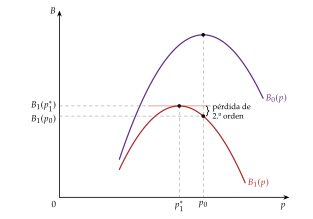
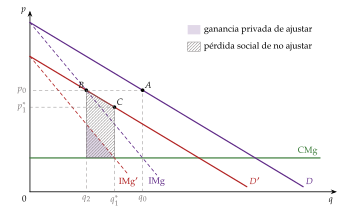
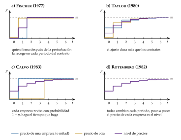
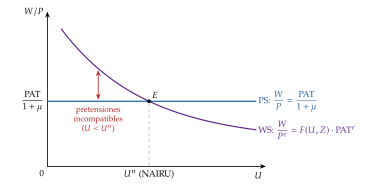
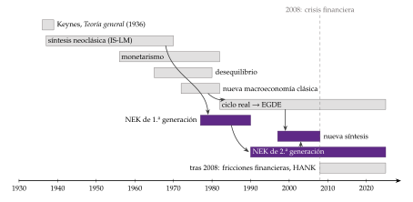

Tema 3.A.7
La nueva economía keynesiana. Primera y segunda generación.
Costes de menú, Blanchard-Kiyotaki, rigideces reales, NAIRU y el modelo nuevo keynesiano de 3 ecuaciones: curva de Phillips, regla de Taylor y nueva síntesis.
Exclusivo Material exclusivo de victorgutierrezmarcos.es y la app Oposición TCEE · DCE. Puedes usarlo libremente para tu estudio personal. No se autoriza su incorporación a otras plataformas, aplicaciones o servicios. Condiciones de uso.
Introducción
Enganche:
«Muchos pocos hacen un mucho», dice el refrán.
Cambiar el precio de la carta le cuesta poco a un restaurante, y sin embargo los precios no se mueven todos los días.
En la zona del euro, entre 2010 y 2019, solo cambiaba en un mes cualquiera el 8 % de los precios de consumo, sin contar las rebajas: un precio duraba de media en torno a un año.
En 2022, con una inflación media del 8,4 %, la proporción subió al 12 %.1
Si cada empresa tarda en mover su precio por una razón tan pequeña, el nivel de precios tarda en ajustarse, y un cambio en la cantidad de dinero o en el tipo de interés mueve la producción y el empleo: muchas fricciones pequeñas suman un efecto grande.
Detrás está la pregunta de esta exposición: ¿cómo pueden fricciones tan pequeñas dar a la política monetaria efectos tan grandes, y qué modelo los explica sin renunciar a agentes racionales?
Relevancia:
Para la teoría: la nueva economía keynesiana (NEK) es la base de la macroeconomía de hoy. Su modelo canónico (una curva IS dinámica, una curva de Phillips y una regla de tipos de interés) es el de los manuales de posgrado y el núcleo de los modelos con los que trabajan los bancos centrales.
Para la política económica: justifica la estabilidad de precios como objetivo, los bancos centrales independientes con un objetivo de inflación y la importancia de la comunicación [ver tema 3.A.36].
Para la actualidad: la crisis de 2008, el límite inferior de los tipos de interés y la inflación de 2021-2023 han puesto a prueba el modelo y lo han ido cambiando.
Para el pensamiento económico: como toda historia del pensamiento, enseña a no quedarse con el último manual y a ver por qué unas ideas llegan en unas épocas y no en otras: son 2 de los 4 motivos que da Schumpeter para estudiarla.2
Contextualización:
Para los clásicos y los neoclásicos, con precios y salarios flexibles los mercados se vacían y el dinero solo determina el nivel de precios [ver tema 3.A.2] [ver tema 3.A.3].
La Gran Depresión rompe esa confianza: en 1936, Keynes publica la Teoría general de la ocupación, el interés y el dinero, en la que la demanda efectiva fija la producción y puede haber paro involuntario sin que nada lo corrija [ver tema 3.A.4].
La síntesis neoclásica (John Hicks, Alvin Hansen, Franco Modigliani, Paul Samuelson, Robert Solow) lo traduce al modelo IS-LM y a la curva de Phillips: keynesiana a corto plazo, por la rigidez del salario nominal, y clásica a largo [ver tema 3.A.5].3
En 1955, Samuelson (1955, 212) escribía que el 90 % de los economistas estadounidenses habían dejado de ser keynesianos o antikeynesianos para trabajar en esa síntesis. Pero la rigidez era un supuesto, no un resultado, y el modelo no partía de decisiones individuales.4
La estanflación de los 70 rompe la curva de Phillips. El monetarismo de Milton Friedman añade las expectativas y la tasa natural de paro [ver tema 3.A.5].
La nueva macroeconomía clásica (NMC) va más lejos: con expectativas racionales y mercados que se vacían, solo la política no anticipada mueve la producción. Los modelos sin microfundamentos fallan cuando cambia la política, porque sus parámetros no son estructurales: es la crítica de Lucas [ver tema 3.A.6].
Con la teoría del ciclo real, el ciclo es la respuesta óptima a perturbaciones tecnológicas en un modelo de equilibrio general dinámico y estocástico (EGDE), y la política de estabilización sobra [ver tema 3.A.42].
La respuesta keynesiana llega en 2 oleadas:
la primera generación de la NEK (finales de los 70 y años 80) acepta la optimización y las expectativas racionales, pero demuestra que con competencia imperfecta y pequeñas rigideces el dinero no es neutral a corto plazo;
la segunda generación (desde los 90) mete esas rigideces dentro del EGDE de la NMC: es la nueva síntesis neoclásica.
Dos conceptos recorren la exposición, la rigidez nominal y la rigidez real, que se distinguen en el cuadro 1: sin rigidez nominal el dinero es neutral aunque haya rigideces reales, y con las 2 las reales amplifican y alargan los efectos de las nominales.
Problemática:
¿Qué rescata la NEK de Keynes y qué toma de sus críticos?
¿Por qué no se ajustan del todo los precios y los salarios si quienes los fijan son racionales? ¿Y por qué importa en el agregado?
¿Qué modelo resulta cuando la rigidez se mete en un EGDE?
¿Qué política monetaria y fiscal se deduce de él, y qué quedó en pie tras 2008 y la inflación de 2021-2023?
Estructura:
La exposición sigue las 2 oleadas de la escuela, un apartado por generación, con más tiempo para la segunda, que es la que usan hoy los bancos centrales:
I. Economistas neokeynesianos de primera generación (I): quiénes son y con qué método, por qué son rígidos los precios y los salarios (rigideces nominales y reales) y el modelo agregado que los junta, la NAIRU;
II. Economistas neokeynesianos de segunda generación (II): cómo adoptan el método de la nueva macroeconomía clásica, el modelo canónico de 3 ecuaciones que resulta, qué política monetaria y fiscal se deduce de él y qué ha quedado de la nueva síntesis tras 2008.
3.A.7. La nueva economía keynesiana. Primera y segunda generación
Introducción2′30″
I. Economistas neokeynesianos de primera generación10′30″
1. Caracterización general de la NEK de 1.ª generación según Schumpeter
2. Modelos
3. Valoración de la NEK de 1.ª generación
II. Economistas neokeynesianos de segunda generación16′
1. Caracterización general de la NEK de 2.ª generación según Schumpeter
2. El modelo canónico de la NEK
3. Implicaciones de política económica
4. Valoración: la nueva síntesis y la importancia de la NEK en el debate económico
Conclusión1′
Reparto del cante: introducción, 2′30″; I, 10′30″ (I.1, 3′30″; I.2, 6′: el cuadro de las rigideces, 0′30″; rigideces nominales, 3′, de ellas los costes de menú, 1′30″; rigideces reales, 1′, y el modelo agregado, 1′30″; I.3, 1′); II, 16′ (II.1, 3′; II.2, 7′; II.3, 3′30″; II.4, 2′30″), y conclusión, 1′. La caracterización de cada generación (autores, universidades, objeto y método) es lo primero que pregunta el tribunal: no baja de 3′30″ en la 1.ª ni de 3′ en la 2.ª, y en la 2.ª se cuentan las 4 modificaciones sobre el modelo del ciclo real (tabla 3). El modelo canónico no baja de 6′: es lo que el tribunal espera ver. Además del refrán del enganche, los dichos, cada uno con su concepto: «entre todos la mataron y ella sola se murió» (Blanchard y Kiyotaki), «si no puedes con tu enemigo, únete a él» (el método de la 2.ª generación), «más vale tarde que nunca» (Calvo), «más vale pasarse que quedarse corto» (el principio de Taylor) y «matar dos pájaros de un tiro» (la divina coincidencia). Los 2 gráficos son los costes de menú, en el bloque I, y el plano \((x_t,\pi_t)\), que se presenta en el modelo canónico (II.2) y se reutiliza en sus implicaciones para las perturbaciones de demanda y de costes. Las funciones clave son la IS dinámica, la curva de Phillips neokeynesiana y la regla de Taylor. Lo que esta exposición resume (salarios de eficiencia, contratos implícitos, NAIRU e histéresis) se cuenta de palabra o con una ecuación: los modelos completos están en sus temas. El modelo canónico, paso a paso, está en el anexo A.
I. Economistas neokeynesianos de primera generación
Una vez situada la NEK frente a la síntesis y a la nueva macroeconomía clásica, pasamos a ver cómo su primera generación da fundamento microeconómico a las rigideces.
Conclusión anticipada: la 1.ª generación explica por qué precios y salarios no se ajustan aunque los agentes sean racionales: pequeñas fricciones nominales, amplificadas por rigideces reales y por la competencia imperfecta, bastan para que la demanda mueva la producción. Pero lo hace con modelos sueltos, estáticos y de equilibrio parcial, y eso limitará su alcance.
I.1. Caracterización general de la NEK de 1.ª generación según Schumpeter
Schumpeter reconoce una escuela de pensamiento por 3 rasgos: un líder, unos seguidores y un cuerpo doctrinal propio, con su objeto y su método. La primera generación de la NEK cumple el tercero, pero no los 2 primeros: es una escuela sin líder.
Sin líder ni seguidores: es un grupo de autores en pie de igualdad, cada uno con su modelo:
N. Gregory Mankiw, David Romer y Laurence Ball, con los costes de menú y las rigideces reales;
George Akerlof y Janet Yellen, con la casi racionalidad y los salarios de eficiencia;
Olivier Blanchard y Nobuhiro Kiyotaki, con los fallos de coordinación;
Joseph Stiglitz, con la información imperfecta en el trabajo y el crédito;
Stanley Fischer y John Taylor, con los contratos escalonados;
Arthur Okun y Robert J. Gordon, con los mercados de clientes y la inflación;
Alan Blinder, con la forma en que las empresas fijan sus precios, y Lawrence Summers, con la histéresis;
en Europa, Richard Layard y Stephen Nickell, con la NAIRU.
Contexto: finales de los 70 y años 80, con la NMC en plena expansión y la teoría del ciclo real recién nacida. La NEK nace a la defensiva: tiene que demostrar que las ideas keynesianas sobreviven con agentes racionales.
Universidades: Robert Hall (1976) llamó de agua salada (saltwater) a los economistas de las universidades de las 2 costas de Estados Unidos y de agua dulce (freshwater) a los de las cercanías de los Grandes Lagos.5
La NEK es de agua salada: el MIT (Fischer, Blanchard), Harvard (Mankiw, Summers), Princeton (Blinder), Yale (Okun), Columbia y Stanford (Taylor) y Berkeley (Akerlof, Yellen, David Romer); en Europa, la London School of Economics (Layard, Nickell).
La NMC es de agua dulce: Chicago, Minnesota, Rochester y Carnegie Mellon.
Cuerpo doctrinal: un objeto y un método comunes, o al menos parecidos.
Objeto: rehabilitar las ideas fundamentales del pensamiento keynesiano, el paro involuntario y la no neutralidad del dinero, microfundamentando las imperfecciones de los mercados (sobre todo la rigidez de precios y salarios y la competencia imperfecta) que la síntesis suponía. No hay un programa único ni un modelo canónico, sino modelos complementarios, cada uno centrado en una causa de la rigidez.
Método: refuerzo de la síntesis neoclásica por el lado de la oferta.
La base la encontramos en el volumen New Keynesian Economics de Mankiw y Romer (1991) y en A Sticky-Price Manifesto de Ball y Mankiw (1994).
Según Mankiw y Romer (1991), todos los modelos neokeynesianos comparten 2 características esenciales:
el dinero no es neutral a corto plazo;
las imperfecciones de los mercados (la competencia imperfecta, la información imperfecta y la rigidez de precios y salarios) desempeñan un papel central para explicar el ciclo.
Aceptan el esqueleto de la síntesis: la demanda agregada mueve la producción a corto plazo y la política monetaria y la fiscal son eficaces. Le dan lo que le faltaba, una oferta con fundamentos, en la que optimizan las empresas que fijan precios y los trabajadores que negocian salarios.
Son eclécticos: conviven modelos complementarios, y cada uno privilegia un determinante de la rigidez.
Comparten un enfoque de equilibrio parcial con alguna imperfección, en modelos sobre todo estáticos (salvo el de equilibrio general de Blanchard y Kiyotaki (1987)).
Los fundamentos de la NEK, en 4 puntos:
Microfundamentos: heredan el método de la NMC y explican el comportamiento agregado con agentes que optimizan, con un uso intenso de las matemáticas, en lugar de relaciones de comportamiento ad hoc. A diferencia de la NMC, la 1.ª generación usa sobre todo modelos de equilibrio parcial; los de la 2.ª ya serán EGDE.
Expectativas racionales: adoptan la hipótesis de Muth (1961), la misma que usa la NMC.
Rasgos de la economía:
fallos de coordinación: aunque los agentes sean racionales, sus expectativas pueden divergir y la economía puede acabar en un equilibrio peor que otro posible;
información imperfecta, por lo general;
competencia imperfecta: empresas y sindicatos tienen poder de mercado, y el modelo de referencia es la competencia monopolística [ver tema 3.A.18].
Los mercados no se vacían continuamente: precios, salarios y tipos de interés no son del todo flexibles y, ante cambios de la demanda, las empresas ajustan las cantidades. Keynes ya hablaba de rigideces; la NEK las endogeneiza, es decir, las microfundamenta. Pueden ser nominales o reales (cuadro 1).6
Frente a las escuelas anteriores:
Frente a la síntesis neoclásica: comparten su visión del mundo en 3 ideas: las rigideces de precios y salarios explican buena parte de las fluctuaciones; la economía puede alejarse de su equilibrio a corto plazo, y la política monetaria y la fiscal influyen en la actividad. Pero le reprochan 2 cosas: no tener microfundamentos y suponer la rigidez del salario nominal sin justificarla.7
Frente al desequilibrio: los keynesianos del desequilibrio (Robert Clower, Robert Barro y Herschel Grossman, Edmond Malinvaud) tomaban los precios fijos como un dato y estudiaban el racionamiento que resultaba; la NEK explica por qué no se mueven [ver tema 3.A.4].
Frente al monetarismo: para Mankiw y Romer (1991), en la nueva disputa entre la NEK y la NMC los monetaristas quedan más cerca de la NEK, porque los 2 creen que el dinero importa a corto plazo [ver tema 3.A.5].
Frente a la NMC: no rechazan su método, sino su conclusión, y su blanco es más la teoría del ciclo real que Lucas: un ciclo sin dinero contradice la vieja idea de que el dinero es neutral a largo plazo pero no a corto. Ball y Mankiw (1994) abren su manifiesto así: «Hay dos clases de macroeconomistas. Unos creen que la rigidez de los precios desempeña un papel central en las fluctuaciones económicas a corto plazo. Los otros, no». A los segundos los tratan como herejes de una tradición monetaria que se remonta al menos a David Hume, de la que la NEK se presenta como heredera.
En resumen: la NEK admite los defectos de los modelos keynesianos anteriores (sin microfundamentos ni justificación de las rigideces), pero, al contrario que Lucas, no los considera irreparables. Pocos años después, la 2.ª generación dará un paso más: aceptará el marco de la NMC entero y meterá las rigideces dentro.
I.2. Modelos
Antes de ver los modelos, conviene separar las 2 clases de rigidez que estudian, porque cada una responde a una pregunta distinta (cuadro 1).
| Rigidez nominal | Rigidez real | |
|---|---|---|
| Qué es | todo lo que impide que los precios o los salarios nominales se ajusten de inmediato a un cambio en sus determinantes | todo lo que hace que el precio o el salario relativo que se desea responda poco a la actividad y se aleje del walrasiano (suele ser mayor, con menos producción y empleo), aunque los nominales fueran flexibles |
| Qué variable | \(P_i\), \(W\) | \(P_i/P\), \(W/P\) |
| Ejemplos | costes de menú, casi racionalidad, contratos escalonados, Calvo | salarios de eficiencia, contratos implícitos, mercados de clientes, márgenes contracíclicos, racionamiento del crédito |
| ¿Da, sola, no neutralidad del dinero? | sí: es condición necesaria, aunque no suficiente, para que se ajusten las cantidades | no: es compatible con precios nominales flexibles |
| Juntas | las reales amplifican y alargan los efectos de las nominales: una fricción nominal pequeña da una rigidez nominal grande | |
Fuente: elaboración propia a partir de Ball y Romer (1990), Mankiw y Romer (1991) y D. Romer (2019, cap. 7).
La primera generación no tiene un modelo, sino una familia. Se ordena por la pregunta que responde cada uno (tabla 2): por qué una empresa racional no ajusta su precio, por qué eso tiene efectos agregados grandes, cómo se ajustan los precios en el tiempo, qué rigideces reales las amplifican y cómo se juntan en un modelo del paro.
| Pregunta | Modelos | Dónde |
|---|---|---|
| ¿Por qué no se ajustan los precios? | Casi racionalidad; costes de menú | I.2.1 |
| ¿Por qué tiene efectos grandes? | Externalidad de demanda agregada | I.2.1 |
| ¿Cómo se ajustan en el tiempo? | Contratos escalonados; reglas de estado | I.2.1; [ver tema 3.A.37] |
| Rigideces reales en bienes y crédito | Rigidez real × nominal; mercados de clientes, colusión contracíclica; racionamiento del crédito | I.2.2; [ver tema 3.A.13] |
| Rigideces reales en el trabajo | Salarios de eficiencia; contratos implícitos | I.2.3; [ver tema 3.A.27] |
| Modelo agregado del paro | NAIRU; histéresis | I.2.3; [ver tema 3.A.28] |
Fuente: elaboración propia a partir de Mankiw y Romer (1991) y D. Romer (2019, cap. 7). En morado, rigideces nominales; en verde y azul, rigideces reales.
I.2.1. Rigideces nominales
La síntesis había puesto la rigidez en el salario nominal; la NEK la pone sobre todo en los precios de empresas con poder de mercado. En competencia perfecta, una empresa que no ajusta su precio pierde todas sus ventas o vende con pérdidas; con competencia imperfecta, solo pierde un poco de beneficio.
La idea central la resume D. Romer (1993): durante años se buscó la no neutralidad del dinero en grandes desviaciones del modelo walrasiano, cuando la clave estaba en los grandes efectos de pequeñas desviaciones. Lo que para cada empresa es una pérdida de segundo orden puede ser, sumado, una caída de la producción de primer orden.
Se ve en 3 pasos: por qué una empresa racional puede no cambiar su precio (casi racionalidad y costes de menú), por qué eso tiene efectos agregados grandes (fallos de coordinación) y cómo se ajustan los precios en el tiempo (reglas de tiempo y de estado).
Casi racionalidad (Akerlof y Yellen, 1985)
a) Idea
Un agente casi racional (o de racionalidad incompleta) no cambia su decisión ante una perturbación si lo que pierde por no hacerlo es pequeño.
b) Modelo
i) Supuestos
Empresas con poder de mercado (competencia monopolística), cada una en su precio óptimo, \(p_0\), cuando llega una perturbación de la demanda.
Una parte de las empresas es casi racional: no ajusta su precio si la pérdida es pequeña.
ii) Desarrollo
Si cae la demanda, el nuevo precio óptimo es \(p^*_1<p_0\). Con un desarrollo de Taylor de segundo orden del beneficio \(B(p)\) alrededor de \(p^*_1\), donde \(B'(p^*_1)=0\), lo que pierde la empresa por no ajustar es \[B(p^*_1)-B(p_0)\approx-\tfrac12\,B''(p^*_1)\,(p^*_1-p_0)^2 \tag{1}\] proporcional al cuadrado de la perturbación: es una pérdida de segundo orden. Es el teorema de la envolvente: en el óptimo, la curva de beneficio es plana (gráfico 1).

Fuente: elaboración propia a partir de D. Romer (2019, cap. 7).
iii) Implicaciones
En un modelo de competencia monopolística en el que una parte de las empresas no ajusta sus precios ante una perturbación monetaria, cada una pierde algo de segundo orden, pero la producción y el empleo agregados cambian en primer orden, en proporción a la perturbación.
c) Valoración
Crítica: el argumento es estático y supone que todas las empresas parten de su óptimo. En un entorno dinámico y estocástico, quien no optimiza casi nunca está en él, y sus pérdidas pueden acumularse. Akerlof y Yellen (1991) responden que, también ahí, las pérdidas de seguir reglas sencillas son pequeñas: no se pueden descartar conductas que no maximizan del todo a corto plazo.
Límite: muchas otras reglas de precios dan pérdidas igual de pequeñas, así que el argumento no explica por qué la empresa elige precisamente no cambiar el precio. Los costes de menú resuelven esa indeterminación.
Costes de menú (Mankiw, 1985)
a) Idea
Los costes de menú son todos los costes de cambiar un precio:
administrativos: imprimir y repartir nuevas listas o etiquetas (de ahí el nombre), pero también decidir el nuevo precio (recoger información, procesarla y analizarla);
no administrativos: arriesgarse a enfadar a los clientes habituales, que pueden buscar un proveedor más estable, o a empezar una guerra de precios.
Son pequeños y se toman como un coste fijo y exógeno, \(z\), cada vez que se cambia el precio.
Mankiw (1985) muestra que un coste así de pequeño basta para que un monopolista racional no ajuste su precio ante un cambio pequeño de la demanda, y que las consecuencias para el bienestar son mucho mayores que lo que la empresa se ahorra: pequeños costes de menú, grandes ciclos.
b) Modelo
i) Supuestos
Un monopolista con coste marginal constante, \(\mathrm{CMg}\), y demanda lineal, que parte de su óptimo \(A=(q_0,p_0)\), donde \(\mathrm{IMg}=\mathrm{CMg}\) [ver tema 3.A.17].
La demanda cae de \(D\) a \(D'\), de forma inesperada, y cambiar el precio cuesta \(z\).
ii) Desarrollo
La empresa tiene 2 opciones (gráfico 2):
ajustar: baja al nuevo precio óptimo \(p^*_1<p_0\), donde \(\mathrm{IMg}'=\mathrm{CMg}\), y vende \(q^*_1\) (punto C);
no ajustar: mantiene \(p_0\) y vende lo que pide la nueva demanda a ese precio, \(q_2<q^*_1\) (punto B).
La ganancia de ajustar es el área entre \(\mathrm{IMg}'\) y \(\mathrm{CMg}\) de \(q_2\) a \(q^*_1\) (el triángulo sombreado), pequeña por lo visto con la casi racionalidad (1). La empresa ajusta solo si \[B(p^*_1)-B(p_0)>z \tag{2}\]
El tamaño del triángulo depende del entorno real de la empresa: de la pendiente del coste marginal (los rendimientos de escala: si el coste marginal baja mucho al caer la producción (rendimientos decrecientes), el triángulo es grande y la empresa ajusta) y de cuánto se desplaza el ingreso marginal (si la elasticidad de la demanda cae en la recesión, se desplaza más y el incentivo a bajar el precio es menor).

Fuente: elaboración propia a partir de Mankiw (1985) y D. Romer (2019, cap. 7).
iii) Implicaciones
Con \(z\) pequeño puede ser óptimo no ajustar: la empresa se ajusta por cantidades, con agentes perfectamente racionales.
El efecto sobre el bienestar es de primer orden: como \(p_0>\mathrm{CMg}\), cada unidad que se deja de vender vale para la sociedad \(p_0-\mathrm{CMg}>0\). La pérdida social de no ajustar (el área entre \(D'\) y \(\mathrm{CMg}\) de \(q_2\) a \(q^*_1\)) es mucho mayor que lo que la empresa se ahorra.
En competencia perfecta, \(p=\mathrm{CMg}\) y ese margen no existe: por eso la competencia imperfecta es imprescindible.
Un ejemplo con números (pregunta 18 del primer ejercicio de julio de 2021). El gráfico 2 es esta misma empresa, con los precios en decenas, ante una caída de la demanda, de \(p=100-10\,q\) a \(p=80-10\,q\): ajustar le da 10 más de beneficio, y no ajustar le cuesta 35 a la sociedad. El test plantea el caso contrario, una subida: un monopolista con \(\mathrm{CMg}=20\) y demanda \(p=100-10\,q\) fija \(q=4\) y \(p=60\), y la demanda sube a \(p=200-10\,q\).
Si ajusta: \(\mathrm{IMg}=200-20\,q=20\), de modo que \(q=9\), \(p=110\) y \(B=(110-20)\cdot 9=810\).
Si mantiene \(p=60\): vende \(q=14\) y gana \(B=(60-20)\cdot 14=560\).
Mantiene el precio si \(z\geq 810-560=250\). Con la subida, quien no ajusta vende más que con el precio óptimo, no menos: por eso el excedente total sube, de 1.215 a 1.540; la sociedad gana 325, más de lo que deja de ganar la empresa.
c) Extensiones
Blanchard y Kiyotaki (1987) lo llevan al equilibrio general (a continuación), Ball y Romer (1990) le añaden las rigideces reales (I.2.2) y Rotemberg (1982) lo hace dinámico con un coste cuadrático de cambiar el precio, que da la misma curva de Phillips que la regla de Calvo de la 2.ª generación (II.2).
d) Evidencia empírica
En las encuestas a empresas, los costes de menú en sentido estricto pesan poco frente a la coordinación con los competidores, los contratos y la relación con los clientes.
Con microdatos, los precios de consumo cambian con poca frecuencia: la mitad dura menos de 4,3 meses en Estados Unidos, y en la zona del euro, sin contar las rebajas, cambia cada mes solo el 8 %, una frecuencia que sube con la inflación (II.4).
e) Valoración
Aportación: da un fundamento microeconómico a la rigidez nominal y explica por qué una fricción pequeña importa.
Límite: como en las recesiones el coste marginal suele caer mucho, el triángulo es grande y la empresa ajusta. Con costes de menú realistas, la rigidez nominal solo es grande si hay además rigideces reales: es la puerta al apartado I.2.2.
Fallos de coordinación (Blanchard y Kiyotaki, 1987)
a) Idea
Blanchard y Kiyotaki (1987) llevan los costes de menú a un modelo de equilibrio general con competencia monopolística à la Dixit y Stiglitz [ver tema 3.A.18]. La rigidez de cada empresa afecta a las demás sin que nadie lo tenga en cuenta: es una externalidad de demanda agregada. Con costes de cambiar los precios, el dinero deja de ser neutral.
Dicho: «entre todos la mataron y ella sola se murió». Ninguna empresa baja su precio porque a cada una le cuesta poco no hacerlo, y la producción cae para todas.
b) Modelo
i) Supuestos
Competencia monopolística con un continuo de variedades. La demanda de la variedad \(i\) depende de su precio relativo y de los saldos reales (con velocidad constante, la demanda agregada es \(Y=M/P\)): \[Y_i=\frac{M}{P}\left(\frac{P_i}{P}\right)^{-\sigma},\qquad \sigma>1 \tag{3}\] con \(\sigma\) la elasticidad de sustitución entre variedades, y cada empresa fija un margen sobre su coste marginal, \(P_i=(1+\mu)\,\mathrm{CMg}_i\), con \(1+\mu\equiv\sigma/(\sigma-1)\) [ver tema 3.A.18].
Cambiar el precio tiene un coste de menú pequeño.
ii) Desarrollo
Si cae \(M\):
si todas las empresas ajustan, \(P\) cae en la misma proporción que \(M\): no cambian los saldos reales ni los precios relativos, y la producción tampoco (neutralidad);
si una empresa no ajusta, pierde algo de segundo orden; pero si ninguna lo hace, \(P\) no baja, caen los saldos reales \(M/P\) y con ellos la demanda de todas: la producción cae en primer orden.
iii) Implicaciones
Al bajar su precio, cada empresa bajaría un poco \(P\) y subiría la demanda de todas las demás. Ese beneficio social no lo cobra ella, así que no ajusta, aunque a todas les convendría que todas lo hicieran: es un fallo de coordinación.
Como con poder de mercado la producción de equilibrio es menor que la eficiente, una expansión de la demanda mejora el bienestar en primer orden: la política de demanda vuelve a tener sentido.
c) Valoración
Es el único modelo de la 1.ª generación de equilibrio general y el antecedente directo de la 2.ª: la competencia monopolística à la Dixit y Stiglitz será su pieza de oferta (II.2).
Cómo se ajustan los precios en el tiempo: reglas de tiempo y de estado
a) Idea
Si cambiar los precios cuesta, la pregunta ya no es si se cambian, sino cuándo. La NEK estudia qué reglas siguen las empresas para revisar sus precios (y sus salarios) y qué resulta al agregarlas [ver tema 3.A.37].
b) Modelo
i) Supuestos
Cambiar el precio (o el salario) cuesta, y cada empresa elige con qué regla lo revisa.
ii) Desarrollo
Hay 2 tipos de reglas:
reglas dependientes del tiempo: el precio o el salario se revisa en fechas fijadas de antemano, pase lo que pase entre medias. Son los contratos escalonados de Fischer (1977) y Taylor (1979, 1980), pensados para los salarios nominales y aplicables a los precios: cada período solo se renegocia una parte de los contratos (gráfico 3). La regla de tiempo más usada hoy es la de Calvo (1983), en la que cada empresa revisa su precio con una probabilidad constante: es la base de la 2.ª generación (II.2);
reglas dependientes del estado: no hay fechas; el precio se cambia cuando la distancia al óptimo supera un umbral, tras comparar el coste de menú con lo que se pierde por no ajustar. La frecuencia de los cambios es endógena y aumenta con la inflación;
las reglas mixtas combinan las 2: revisión periódica y ajuste extraordinario, pagando el coste de menú, ante una perturbación grande.
iii) Implicaciones
El intervalo óptimo entre revisiones se acorta cuanto mayores son la inflación y la varianza de la demanda agregada y de las perturbaciones de la empresa. Por eso la curva de Phillips es más inclinada donde la inflación es más alta: los precios se ajustan antes y la demanda mueve menos la producción.
Lo que alarga los efectos reales no es la rigidez de cada precio, sino el escalonamiento. Si todas las empresas revisaran a la vez (sincronización), el efecto de una perturbación duraría lo que tarda la próxima revisión. Con revisiones escalonadas, ninguna ajusta del todo, para no alejar su precio relativo del de las demás, y el ajuste del nivel de precios es lento.
c) Valoración
El escalonamiento parece inevitable en una economía con miles de empresas distintas, pero con empresas idénticas no es un equilibrio estable: la que revisa en otro momento que la mayoría tiene incentivos a pasarse a su calendario, y el único equilibrio estable es la sincronización. Lo sostienen la heterogeneidad de las perturbaciones de cada empresa o el interés en esperar a ver qué precio fijan los competidores antes de fijar el propio.
De Fischer y Taylor a Calvo: por qué la 2.ª generación se queda con Calvo (para consultar; no se canta):
Para qué nacen los contratos escalonados: los 2 modelos responden a la proposición de inefectividad de Sargent y Wallace (1975): con expectativas racionales, la política monetaria sistemática no tendría efectos reales [ver tema 3.A.6].
Fischer (1977):
los contratos duran 2 períodos y se firman por mitades;
el salario de cada período se fija al firmar, con lo que se espera entonces: \(w^j_t=\mathbb{E}_{t-j}[p_t]\), y puede ser distinto en cada período del contrato;
el banco central puede reaccionar a lo que pasa después de firmados los contratos y estabilizar la producción, aunque las expectativas sean racionales.
Taylor (1979, 1980):
el salario queda fijo durante todo el contrato y las revisiones no están sincronizadas;
cada empresa que revisa mira el salario de las que no revisan;
los efectos de la política monetaria duran más que los propios contratos, aunque al final se ajustan los precios.
Lo que muestran los 2: expectativas racionales y política eficaz son compatibles. Lo que da la neutralidad es la flexibilidad de los precios, no las expectativas. Con su perspectiva dinámica, se adelantaron al giro intertemporal de la NMC.
Por qué los superó la regla de Calvo (1983) y encaja mejor en los EGDE de la 2.ª generación:
no tiene memoria: cada empresa revisa con la misma probabilidad, \(1-\eta\), haga el tiempo que haga, así que no hace falta seguir a cada cohorte de contratos: todo lo que importa del pasado está en el nivel de precios del período anterior, \(\pi_t=(1-\eta)(p^*_t-p_{t-1})\);
sale de optimizar: la empresa que revisa elige el precio que maximiza el valor esperado de sus beneficios mientras dure, dentro de una economía de hogares que maximizan su utilidad; las reglas de Fischer y de Taylor se suponían;
se agrega en una ecuación: la curva de Phillips neokeynesiana, con una pendiente que depende de parámetros estructurales (\(\eta\), \(\beta\), \(\theta\), \(\varphi\)), que cabe en un EGDE log-linealizado; con contratos de duración fija, hay que llevar tantas variables como cohortes;
da el coste de la inflación: con Calvo, la inflación dispersa los precios relativos, y esa dispersión es la que justifica que el banco central se preocupe por la inflación; el coste cuadrático de Rotemberg (1982) da la misma curva a primer orden, pero todas las empresas cambian a la vez, no hay dispersión y el coste de la inflación es otro: lo que cuesta ajustar los precios;
su precio: la frecuencia de los cambios es exógena y no sube con la inflación, como sí predicen las reglas dependientes del estado.

Aportaciones, críticas y limitaciones de las fricciones nominales (para consultar; no se cantan):
Aportaciones:
un verdadero fundamento microeconómico de la rigidez nominal: el estudio pasa de los salarios a los precios, la competencia imperfecta es el modelo de referencia y se buscan razones por las que un agente racional no cambia su precio;
un análisis riguroso de sus consecuencias: las reglas de tiempo y de estado salen de optimizar y, agregadas, dan (no siempre) la no neutralidad del dinero y la respuesta asimétrica de precios y producción;
nuevos instrumentos para modelizar a las empresas, como la casi racionalidad y la heterogeneidad de los agentes.
Críticas:
también cuesta ajustar la producción, y puede costar más que ajustar el precio; la réplica es empírica: las cantidades fluctúan mucho más que los precios;
el argumento es estático: los costes de menú se pagan una vez y las pérdidas de no ajustar se acumulan, así que una perturbación permanente acaba trasladándose a los precios. Los costes de menú explican bien la rigidez ante perturbaciones pequeñas y transitorias.
Limitaciones:
el efecto de las fricciones nominales depende del entorno real de la empresa (rendimientos de escala, poder de mercado y su ciclicidad);
como la decisión de cada empresa depende de lo que hagan las demás, puede haber equilibrios múltiples, con y sin ajuste, para la misma perturbación;
la casi racionalidad no explica por qué se elige mantener el precio y no otra regla con pérdidas igual de pequeñas.
I.2.2. Rigideces reales
Idea: los costes de menú solo frenan el ajuste si la ganancia de ajustar es pequeña, y eso depende del entorno real de la empresa. Si el coste marginal cae mucho en una recesión, la empresa quiere bajar mucho el precio y lo baja. Para que no lo baje, el precio relativo que desea tiene que responder poco a la actividad: es la rigidez real. Ball y Romer (1990) muestran que una rigidez nominal grande puede salir de juntar rigideces reales y fricciones nominales pequeñas, y Mankiw y Romer (1991) cuentan esa interacción entre los rasgos distintivos de la NEK.
Analíticamente (en logaritmos): si el precio que desea la empresa \(i\) es \(p^*_i=p+\chi\,y\), con \(y=m-p\) y \(\chi>0\) la sensibilidad del precio relativo deseado a la producción (local), entonces \[p^*_i=\chi\,m+(1-\chi)\,p \tag{4}\]
ante una caída de \(m\) con los demás precios quietos, la ganancia de ajustar es proporcional a \((\chi\,\Delta m)^2\), y no ajustar es un equilibrio si es menor que \(z\);
cuanto menor es \(\chi\) (más rigidez real), más fácil es ese equilibrio, y con \(\chi<1\) los precios son complementarios estratégicos: cada empresa quiere mover poco su precio si las demás no mueven el suyo.
En el mercado de bienes, el margen deseado no baja (o sube) en las recesiones, de modo que el precio relativo apenas responde. Las 2 razones principales:
los mercados de clientes: la empresa no cambia sus precios para no dar a sus clientes motivos para buscar otro proveedor;
la colusión contracíclica: cuando la demanda es alta, a cada empresa le tienta más romper la colusión tácita bajando el precio, así que el margen es mayor en las recesiones.
En el mercado de crédito, la información asimétrica entre el banco y el prestatario hace que el tipo de interés no vacíe el mercado: el banco prefiere racionar el crédito antes que subir el tipo y atraer a los prestatarios más arriesgados [ver tema 3.A.13]. Y el coste de la financiación externa depende del patrimonio del prestatario, que cae en las recesiones: es el germen del acelerador financiero de la 2.ª generación [ver tema 3.A.37].
En el mercado de trabajo, las rigideces reales son las que fundamentan el modelo agregado del paro, a continuación.
Otras rigideces reales del mercado de bienes (de pasada): las barreras de entrada; la información imperfecta sobre la calidad, que hace que bajar el precio parezca bajar la calidad; la reserva de capacidad; los plazos de entrega variables, que permiten ajustar sin tocar el precio, y las externalidades de los mercados densos, en los que buscar cuesta menos en las expansiones.
I.2.3. El modelo agregado: la NAIRU y la histéresis
La NEK busca en el mercado de trabajo por qué el salario real no baja aunque haya paro. Si no baja, tampoco el coste marginal, y las empresas tienen menos motivos para bajar los precios: son rigideces reales que amplifican las nominales. Las 2 familias de modelos tienen su desarrollo en otro tema [ver tema 3.A.27]:
Salarios de eficiencia: si el esfuerzo depende del salario, \(e=e(w)\) con \(e'>0\), pagar más puede salir más barato. En el modelo de Solow (1979), la empresa fija el salario que minimiza el coste por unidad de trabajo efectivo, \(w/e(w)\), y lo encuentra donde la elasticidad del esfuerzo al salario es la unidad (condición de Solow): \[\varepsilon_{e,w}\equiv\frac{w^*\,e'(w^*)}{e(w^*)}=1 \tag{5}\] Ese salario no depende de la demanda: es una rigidez real, y si a ese salario las empresas no contratan a todos, hay paro involuntario. El esfuerzo depende del salario por 5 motivos: nutrición, rotación, selección adversa, escaqueo y equidad. En el modelo de Shapiro y Stiglitz, la empresa no ve el esfuerzo y despide a quien pilla escaqueándose: el salario tiene que cumplir la condición de no escaqueo (CNE), que es la restricción de compatibilidad de incentivos (IC) del principal-agente [ver tema 3.A.13], y es tanto más alto cuanto menor es el paro. El paro es lo que disciplina a los trabajadores.8
Contratos implícitos: la empresa, neutral al riesgo, asegura a trabajadores aversos al riesgo con un salario estable a lo largo del ciclo, y el ajuste se hace por el empleo. Explican la rigidez del salario real, pero no el paro involuntario: el empleo de cada estado es el eficiente. Y lo que estabilizan es el salario real, no el nominal; por eso la NEK los deja en segundo plano y busca la rigidez nominal en los precios.9
La rama europea de la 1.ª generación junta esas rigideces y la competencia imperfecta en un modelo agregado del paro, el de fijación de salarios y precios de Layard y Nickell (1985) y Layard, Nickell y Jackman (1991), pensado para el paro europeo de los 70 y los 80 [ver tema 3.A.28]:
Curva de fijación de salarios (WS): los salarios se fijan (por negociación o como salarios de eficiencia) antes de conocer los precios; crecen con lo que se espera de los precios y de la productividad y bajan con el paro: \[\frac{W}{P^e}=F(U,Z)\cdot\mathrm{PAT}^e,\qquad F_U<0 \tag{6}\] y \(F_Z>0\), con \(Z\) los factores institucionales (prestaciones por desempleo, poder sindical, protección del empleo, impuestos sobre el trabajo).
Curva de fijación de precios (PS): las empresas fijan un margen \(\mu\) sobre el coste laboral unitario, \(W/\mathrm{PAT}\): \[P=(1+\mu)\,\frac{W}{\mathrm{PAT}}\quad\Longrightarrow\quad\frac{W}{P}=\frac{\mathrm{PAT}}{1+\mu} \tag{7}\]
Equilibrio: sin sorpresas (\(P^e=P\), \(\mathrm{PAT}^e=\mathrm{PAT}\)), la NAIRU es la tasa de paro que hace compatibles las 2 curvas (gráfico 4): \[F(U^n,Z)=\frac{1}{1+\mu} \tag{8}\]

Fuente: elaboración propia a partir de Layard, Nickell y Jackman (1991) y Carlin y Soskice (2015, cap. 2).
Implicaciones:
la NAIRU es un paro involuntario y de equilibrio, fruto de un conflicto distributivo: los trabajadores reclaman una parte \(F(U,Z)\) de lo que se produce y las empresas, una parte \(\mu/(1+\mu)\); el paro es lo que modera las pretensiones hasta que encajan;
la política de demanda solo baja el paro de forma transitoria y a costa de más inflación; bajarlo de forma duradera exige actuar sobre \(Z\) y \(\mu\), con políticas de oferta y de competencia;
la NAIRU no la inventó la NEK: la idea es de Modigliani y Papademos (1975), con el nombre de NIRU, y para Ball y Mankiw (2002) es «aproximadamente un sinónimo» de la tasa natural de Friedman: lo que cambia es el modelo con que se explica.
Extensión: la histéresis. Tras una recesión, el paro puede no volver a su nivel, porque la NAIRU depende de su propia historia. En la versión pura, no hay una tasa de equilibrio única y la demanda mueve también la de equilibrio; en la versión débil, la hay a largo plazo, pero el paro es muy persistente. Los 3 mecanismos [ver tema 3.A.28]:
la caída de la inversión reduce el capital y, con él, el empleo que se puede sostener;
los parados de larga duración pierden capital humano y se desaniman, y les cuesta más volver a encontrar empleo;
los insiders que conservan el empleo negocian salarios pensando en ellos y no en los parados (outsiders), que ya no cuentan en la negociación [ver tema 3.A.27].
I.3. Valoración de la NEK de 1.ª generación
Aportaciones:
un fundamento microeconómico de la rigidez nominal y del paro involuntario con agentes racionales: lo que la síntesis suponía, la NEK lo explica;
el ciclo vuelve a ser, en parte, un fenómeno de demanda: las perturbaciones de la demanda agregada (monetarias, fiscales o de confianza, incluso las profecías autocumplidas) mueven la producción a corto plazo, anticipadas o no, porque los precios y los contratos se fijaron antes. En la NMC, solo las no anticipadas;
la política monetaria tiene efectos reales a corto plazo y es neutral a largo: la economía vuelve a su producción con precios más altos. Pero su uso sistemático para bajar el paro solo sube la inflación media y hace que los precios se ajusten antes, con lo que pierde eficacia. Por eso no defienden la sintonía fina de la síntesis: la estabilización es posible, no obligatoria.
Limitaciones:
en el debate entre reglas y discrecionalidad no hay posición común: Taylor, de la 1.ª generación, propondrá su regla, y la 2.ª defenderá el compromiso con reglas [ver tema 3.A.36];
no lograron frenar a la NMC por 2 razones: su actitud fue defensiva, con modelos estáticos y de equilibrio parcial, cada uno con una imperfección, cuando la NMC ofrecía un marco dinámico y general; y el programa aplicado del ciclo real (calibrar y simular economías artificiales) los dejó atrás;
la evidencia de que los costes de menú en sentido estricto pesan poco obligó a apoyarse en las rigideces reales.
Recapitulación: la 1.ª generación encontró las piezas (competencia imperfecta, pequeñas fricciones nominales, rigideces reales y un modelo del paro), pero no un modelo que las uniera. Una vez vistas las piezas, pasamos a ver cómo la 2.ª generación las monta en un modelo dinámico de equilibrio general.
II. Economistas neokeynesianos de segunda generación
Vista la primera generación y sus límites, pasamos a la segunda, que cambia de estrategia: en lugar de oponer modelos parciales a la NMC, acepta su marco y le mete dentro las rigideces.
Conclusión anticipada: la 2.ª generación toma el método de sus rivales, los EGDE con expectativas racionales, y le añade competencia monopolística y precios rígidos. Resulta un modelo de 3 ecuaciones en el que la política monetaria tiene efectos reales a corto plazo y en el que, salvo ante perturbaciones de costes, estabilizar la inflación estabiliza también la actividad. Esa receta, la de la nueva síntesis, guió a los bancos centrales hasta 2008, y desde entonces el modelo se ha ampliado, no sustituido.
II.1. Caracterización general de la NEK de 2.ª generación según Schumpeter
Con los 3 rasgos de Schumpeter (líder, seguidores y cuerpo doctrinal), la 2.ª generación es otra vez una escuela sin líder, pero con un cuerpo doctrinal mucho más compacto que la 1.ª: un modelo canónico.
Sin líder ni seguidores: un grupo de autores en pie de igualdad que construye el modelo desde los 90:
Marvin Goodfriend y Robert King, que bautizan la nueva síntesis;
Julio Rotemberg y Michael Woodford, que derivan la política monetaria óptima del bienestar de los hogares;
Richard Clarida, Jordi Galí y Mark Gertler, que dan la versión de referencia;
Lawrence Christiano, Martin Eichenbaum y Charles Evans y Frank Smets y Raf Wouters, que lo llevan a los datos;
Ben Bernanke, con las fricciones financieras, y Olivier Blanchard, puente entre las 2 generaciones.
Contexto: los 90 y los 2000, la Gran Moderación: inflación baja y estable, bancos centrales independientes que adoptan objetivos de inflación y modelos del ciclo real que ya son el lenguaje común de la macroeconomía [ver tema 3.A.42].
Universidades e instituciones: Princeton (Woodford, Bernanke), Columbia, Nueva York (Gertler), el MIT y Northwestern (Christiano, Eichenbaum); en Europa, la Universitat Pompeu Fabra y el CREI (Galí). Y, cosa nueva, los bancos centrales: la Reserva Federal y el BCE (Smets) desarrollan y usan el modelo.
Cuerpo doctrinal: un objeto y un método comunes.
Objeto: el ciclo y las políticas económicas óptimas, con especial atención a la política monetaria óptima: qué regla debe seguir el banco central y con qué objetivo.
Método: apalancamiento sobre la nueva macroeconomía clásica. Aceptan sus reglas del juego y cambian la esencia de los modelos del ciclo real. Dicho: «si no puedes con tu enemigo, únete a él». Se resume en 3 ideas:
Microfundamentación: siguiendo a Lucas, no hay separación entre los principios con que se construye la microeconomía y los de la macroeconomía. Cada relación agregada sale de agentes que optimizan, y sus parámetros (preferencias y tecnología) no cambian con la política: es la respuesta a la crítica de Lucas [ver tema 3.A.6].
Modelos de equilibrio general dinámico y estocástico (EGDE), con sus 4 letras [ver tema 3.A.6]:
equilibrio: las decisiones salen de problemas de optimización con restricciones;
general: se estudia la economía entera, con un agente representativo (una versión manejable del equilibrio general), y las decisiones de unos son las restricciones de otros: los hogares eligen consumo y trabajo, y las empresas, producción y precios;
dinámico: los agentes optimizan en un horizonte infinito, ligados por la ecuación de Euler [ver tema 3.A.29], y el equilibrio ya no es una asignación, sino una senda; lo hacen posible la programación dinámica y los métodos numéricos;
estocástico: hay perturbaciones, los hogares maximizan la utilidad esperada y forman sus expectativas de forma racional.
Rigideces con competencia imperfecta: es lo que los distingue de la NMC. El modelo neokeynesiano es, en esencia, un modelo del ciclo real con modificaciones, igual que el del ciclo real es un modelo de Ramsey con modificaciones [ver tema 3.A.42]. Parten de una economía con horizonte infinito, cerrada y sin sector público, en la que el dinero solo es unidad de cuenta, y le hacen 4 modificaciones (tabla 3):
bienes diferenciados y competencia monopolística: un continuo de variedades \(Y_t(i)\), \(i\in[0,1]\); como cada empresa vende algo distinto, aunque haya muchas tiene poder de mercado y fija su precio, que es lo primero que hace falta para que haya rigidez de precios;
rigideces nominales: con poder de mercado y algún freno al ajuste de los precios, la política monetaria tiene efectos reales; el freno se introduce de 2 formas: restricciones a la frecuencia con que se revisan los precios, à la Calvo (la más usada), o costes de ajustarlos, à la Rotemberg (la versión dinámica de los costes de menú); lo mismo puede hacerse con los salarios;
sin capital: la persistencia la dan las rigideces, así que el modelo básico prescinde del capital y la inversión;
más perturbaciones: además de la tecnológica, de demanda, de costes y de política monetaria.
Las 3 primeras van juntas: están para romper la neutralidad del dinero.
Con estos cambios, el dinero y la política monetaria vuelven a primera plana, ahora con la no neutralidad ligada a la lentitud del ajuste de los precios.
| Modificación | Ciclo real | NEK de 2.ª generación | Para qué |
|---|---|---|---|
| Bienes y competencia | un bien homogéneo, competencia perfecta | variedades \(Y_t(i)\), competencia monopolística | las empresas fijan su precio |
| Precios | flexibles | rígidos: Calvo o Rotemberg | el dinero deja de ser neutral |
| Capital | con capital e inversión, fuente de persistencia | sin capital | la persistencia la dan las rigideces |
| Perturbaciones | tecnológica | tecnológica, de demanda, de costes y monetaria | estudiar la política monetaria |
Fuente: elaboración propia a partir de Galí (2015, caps. 2 y 3) y Goodfriend y King (1997).
Frente a la 1.ª generación: las rigideces son las mismas; lo que cambia es el marco (tabla 4). Por eso, la teoría del ciclo real y la 2.ª generación son 2 transformaciones sucesivas del programa EGDE de Lucas, Kydland y Prescott más que 2 escuelas enfrentadas: el ciclo real no pasa a la historia, sino que se le añaden fricciones.
| 1.ª generación | 2.ª generación | |
|---|---|---|
| Objeto | paro y subempleo | política monetaria óptima |
| Enfoque | sobre todo estático | dinámico |
| Equilibrio | parcial o general incompleto | general |
| Vaciado de los mercados | no: la oferta no coincide con la demanda | sí: las empresas atienden la demanda al precio que fijaron |
| Frente a la síntesis neoclásica | visión ecléctica | defensa de una macroeconomía homogénea de estilo walrasiano |
Fuente: adaptado de De Vroey (2016), tabla 18.1.
II.2. El modelo canónico de la NEK
a) Idea
La pregunta: ¿cómo afectan la política monetaria y las perturbaciones a la inflación y a la actividad cuando los precios son rígidos, pero los agentes optimizan y tienen expectativas racionales?
La respuesta de Clarida, Galí y Gertler (1999), Woodford (2003) y Galí (2015) es un modelo pequeño que cabe en 3 ecuaciones log-linealizadas: la demanda (hogares), la oferta (empresas) y la política monetaria (banco central). Se le llama modelo de 3 ecuaciones, como al IS-PC-MR de Carlin y Soskice, que es una versión de manual con otra lógica: no hay que confundirlos.
b) Modelo
i) Supuestos
El punto de partida, el modelo del ciclo real: una economía con horizonte infinito, cerrada, sin sector público, que produce un bien final \(Y_t\) [ver tema 3.A.42].
Un hogar representativo de vida infinita que consume, trabaja y ahorra en bonos, con utilidad CRRA en el consumo (\(\theta\), la inversa de la elasticidad de sustitución intertemporal) y desutilidad del trabajo (\(\varphi\), la inversa de la elasticidad de Frisch).
Economía sin dinero (cashless): el dinero solo es unidad de cuenta, no medio de cambio ni depósito de valor; se ahorra en bonos al tipo de interés nominal \(i_t\), que fija el banco central.
Las 4 modificaciones (tabla 3):
un continuo de empresas \(i\in[0,1]\), cada una con una variedad, en competencia monopolística à la Dixit y Stiglitz (1977), con elasticidad de sustitución \(\sigma>1\) [ver tema 3.A.18]; producen solo con trabajo y rendimientos constantes, \(Y_t(i)=A_t\,L_t(i)\);
rigidez nominal à la Calvo (1983): cada período, cada empresa puede revisar su precio con probabilidad \(1-\eta\), haga el tiempo que haga desde la última vez; con probabilidad \(\eta\) lo mantiene;
sin capital: no hay inversión ni gasto público, así que todo lo que se produce se consume, \(Y_t=C_t\);
4 perturbaciones: de tecnología (\(A_t\)), de preferencias o de demanda (\(Z_t\)), de costes (\(u_t\)) y de política monetaria (\(\varepsilon_t\)).
Las ecuaciones se log-linealizan alrededor de un estado estacionario con inflación cero; las minúsculas son logaritmos y \(x_t\equiv y_t-y^n_t\) es la brecha de producción, la distancia entre la producción y la que habría con precios flexibles, \(y^n_t\) (la natural).10
ii) Desarrollo
Hogares: la curva IS dinámica. El hogar resuelve \[\begin{array}{rl}\displaystyle \max_{\{C_t,L_t,B_t\}} & \displaystyle \mathbb{E}_0\sum_{t=0}^{\infty}\beta^t\,Z_t\left(\frac{C_t^{1-\theta}-1}{1-\theta}-\frac{L_t^{1+\varphi}}{1+\varphi}\right) \\ \text{s.a.} & P_t\,C_t+\frac{B_t}{1+i_t}\leq B_{t-1}+W_t\,L_t+D_t\end{array}\] con \(B_t\) los bonos nominales (local: en el resto del temario \(B\) es el beneficio), \(D_t\) los beneficios de las empresas y \(C_t\) el índice de consumo de Dixit y Stiglitz.
\(Z_t\) es la perturbación de demanda: un cambio exógeno en las preferencias que hace que el hogar quiera consumir más hoy que mañana. Como en Galí (2015, cap. 3), su logaritmo sigue un proceso autorregresivo, \(z_t\equiv\ln Z_t=\rho_z\,z_{t-1}+\) una innovación de media cero, con \(0\leq\rho_z<1\) (local; la \(Z\) de la curva WS y la \(z\) de los costes de menú son otras cosas).
De las condiciones de primer orden salen la demanda de cada variedad, \(C_t(i)=(P_t(i)/P_t)^{-\sigma}C_t\), la oferta de trabajo, \(W_t/P_t=C_t^{\theta}L_t^{\varphi}\), y la ecuación de Euler [ver tema 3.A.29].
Y una condición de transversalidad: el valor presente de los bonos que se dejan en el infinito, medido con la utilidad marginal, tiende a cero, \[\lim_{T\to\infty}\beta^T\,\mathbb{E}_t\Big[Z_T\,C_T^{-\theta}\,\frac{B_T}{P_T}\Big]=0.\] Junto con la prohibición de los juegos de Ponzi, descarta tanto endeudarse sin límite como acumular riqueza que nunca se consume.
Log-linealizando la ecuación de Euler, con \(y_t=c_t\): \[y_t=\mathbb{E}_t[y_{t+1}]-\frac{1}{\theta}\big(i_t-\mathbb{E}_t[\pi_{t+1}]-\rho\big)+\frac{1-\rho_z}{\theta}\,z_t,\qquad\rho\equiv-\ln\beta.\] Restando la misma ecuación con precios flexibles (anexo A.5) se obtiene la curva IS dinámica (o aumentada con expectativas):
\[x_t=\mathbb{E}_t[x_{t+1}]-\frac{1}{\theta}\big(i_t-\mathbb{E}_t[\pi_{t+1}]-r^n_t\big)\tag{9}\]
con \(r^n_t\) el tipo de interés real natural, el tipo real que habría con precios flexibles: \[r^n_t=\rho+\theta\,\mathbb{E}_t[\Delta y^n_{t+1}]+(1-\rho_z)\,z_t \tag{10}\]
\(z_t\) no aparece suelta en la IS: entra a través del tipo natural. Si los hogares quieren consumir más hoy (\(z_t\) sube), con precios flexibles el tipo real tendría que subir para que siguieran consumiendo lo que se produce: sube \(r^n_t\). Por eso la perturbación de demanda se representa con \(r^n_t\) (gráficos 5 y 6), que recoge cualquier perturbación de demanda (preferencias, gasto público) y se lee mejor: lo que importa es la distancia entre el tipo real y el natural.
\(r^n_t\) no depende de la política monetaria, solo de las preferencias y de la tecnología.
Si el tipo real, \(i_t-\mathbb{E}_t[\pi_{t+1}]\), supera al natural, los hogares aplazan consumo y la brecha cae; la sensibilidad es la elasticidad de sustitución intertemporal, \(1/\theta\).11
Es prospectiva: resolviendo hacia delante, la brecha de hoy depende de toda la senda futura de tipos reales, \(x_t=-\frac1\theta\sum_{k\geq0}\mathbb{E}_t[i_{t+k}-\pi_{t+k+1}-r^n_{t+k}]\). Por eso importan los anuncios del banco central.
A diferencia de la IS de la síntesis, sale de la optimización del hogar: es estructural, y la crítica de Lucas no la alcanza [ver tema 3.A.6].
Empresas: la curva de Phillips neokeynesiana. Si pudiera, cada empresa fijaría su precio con un margen constante sobre su coste marginal nominal, \(P_t(i)=(1+\mu)\,\mathrm{CMg}^n_t\), con \(1+\mu\equiv\sigma/(\sigma-1)\). Con Calvo solo revisa con probabilidad \(1-\eta\), y un precio dura de media \(1/(1-\eta)\) períodos (con \(\eta=0{,}75\) trimestral, un año). Dicho: «más vale tarde que nunca».
La que revisa en \(t\) sabe que su precio puede durar: lo fija pensando en todos los períodos en que seguirá vigente, ponderados por la probabilidad \(\eta^k\) de que siga. En logaritmos, el precio de reajuste es el margen sobre la media ponderada de los costes marginales esperados: \[p^*_t=\mu+(1-\beta\eta)\sum_{k=0}^{\infty}(\beta\eta)^k\,\mathbb{E}_t\big[\mathrm{cmg}^n_{t+k}\big] \tag{11}\] con \(\ln(1+\mu)\approx\mu\).
El nivel de precios mezcla los que revisan y los que no: \(\pi_t=(1-\eta)(p^*_t-p_{t-1})\).
Juntando las 2 (anexo A), la inflación depende de la esperada y del coste marginal real en desviación de su estado estacionario, \(\widehat{\mathrm{cmg}}_t\), con el coeficiente \((1-\eta)(1-\beta\eta)/\eta\). Y con trabajo como único factor y la oferta de trabajo del hogar, \(\widehat{\mathrm{cmg}}_t=(\theta+\varphi)\,x_t\): si la producción supera la natural, hay que pagar más salario real por más horas. Queda la curva de Phillips neokeynesiana (NKPC):
\[\pi_t=\beta\,\mathbb{E}_t[\pi_{t+1}]+\kappa\,x_t+u_t\tag{12}\]
con la pendiente \[\kappa\equiv\frac{(1-\eta)(1-\beta\eta)}{\eta}\,(\theta+\varphi) \tag{13}\] y \(u_t\) una perturbación de costes (cambios en el margen deseado o en los impuestos) que no viene de la brecha.12
Lectura: resolviendo hacia delante (sin \(u_t\)), \(\pi_t=\kappa\sum_{k\geq0}\beta^k\,\mathbb{E}_t[x_{t+k}]\): la inflación de hoy es el valor presente de las brechas futuras [ver tema 3.A.41]. Frente a la curva aumentada de Friedman y Phelps [ver tema 3.A.5], la expectativa es la de la inflación de mañana y sale de la optimización de las empresas. Cuanto más rígidos los precios (\(\eta\) mayor), menor \(\kappa\): la curva es más plana y la política monetaria mueve más la producción y menos la inflación.
Banco central: la regla de tipos de interés. La IS da la brecha para una senda de tipos y la NKPC, la inflación para una senda de brechas: falta cómo se fija \(i_t\). Se cierra con una regla de Taylor en su forma canónica [ver tema 3.A.36]:
\[i_t=\rho+\phi_\pi\,\pi_t+\phi_x\,x_t+\varepsilon_t\tag{14}\]
con \(\varepsilon_t\) una perturbación de política monetaria (lo que hace el banco central al margen de la regla). En los modelos estimados se añade la suavización, \(i_t=\nu\,i_{t-1}+(1-\nu)(\rho+\phi_\pi\pi_t+\phi_x x_t)+\varepsilon_t\), con \(0\leq\nu<1\).
La forma original la propuso Taylor (1993) en la conferencia Carnegie-Rochester de noviembre de 1992, como una regularidad que describía bien la política de la Reserva Federal: \(i_t=2+\pi_t+0{,}5(\pi_t-2)+0{,}5\,x_t\) (en %), es decir, \(i_t=1+1{,}5\,\pi_t+0{,}5\,x_t\). Sus ventajas e inconvenientes se discuten en el diseño de la política monetaria [ver tema 3.A.36].
El modelo cerrado. Las 3 ecuaciones forman un sistema: la regla fija \(i_t\), la IS da \(x_t\) y la NKPC da \(\pi_t\), que vuelve a la regla (gráfico 5).

Fuente: elaboración propia a partir de Galí (2015, cap. 3).
El equilibrio en el plano \((x_t,\pi_t)\), con las expectativas dadas (gráfico 6):
la NKPC es una recta creciente de pendiente \(\kappa\), que se desplaza con \(\mathbb{E}_t[\pi_{t+1}]\) y con \(u_t\);
sustituyendo la regla en la IS (con expectativas nulas, perturbaciones transitorias) sale la demanda agregada dinámica, decreciente: \[\pi_t=-\frac{\theta+\phi_x}{\phi_\pi}\,x_t+\frac{r^n_t-\rho-\varepsilon_t}{\phi_\pi} \tag{15}\] Es decreciente porque, si sube la inflación, el banco central sube el tipo real y cae la demanda; se desplaza a la derecha si sube el tipo natural y a la izquierda con una subida discrecional de los tipos (\(\varepsilon_t>0\)).

iii) Implicaciones
El dinero no es neutral a corto plazo, pero sí a largo: con precios rígidos, subir \(i_t\) sube el tipo real, baja la brecha y, con ella, la inflación. A largo plazo, con \(\pi\) constante, la NKPC da \(x=\frac{1-\beta}{\kappa}\,\pi\): como \(\beta\) es casi 1, la curva es casi vertical y apenas hay trade-off permanente.
Una perturbación de demanda (\(r^n_t\) sube) desplaza la DA a la derecha y sube a la vez la brecha y la inflación; una de costes (\(u_t>0\)) desplaza la NKPC hacia arriba y sube la inflación con una brecha negativa (gráfico 6). Qué debe hacer el banco central en cada caso es lo que se deduce del modelo para la política económica (II.3).
c) Extensiones
Inercia de la inflación: la NKPC pura no da persistencia. Con indexación de los precios que no se revisan a la inflación pasada o con una parte de empresas que siguen una regla sencilla sale una curva de Phillips híbrida, con \(\gamma_b\) y \(\gamma_f\) (locales) los pesos retrospectivo y prospectivo: \[\pi_t=\gamma_b\,\pi_{t-1}+\gamma_f\,\mathbb{E}_t[\pi_{t+1}]+\kappa\,x_t+u_t \tag{16}\]
Información rígida: Mankiw y Reis (2002) sustituyen la rigidez de los precios por la de la información: todos cambian el precio cada período, pero solo una parte actualiza su información, y las perturbaciones pasan a los precios poco a poco.
Salarios rígidos: con salarios fijados también à la Calvo hay 2 curvas de Phillips, de precios y de salarios, y estabilizar solo la inflación de precios ya no es óptimo.
Modelos medianos: con capital, costes de ajuste de la inversión, hábitos e indexación, Christiano, Eichenbaum y Evans (2005) reproducen la respuesta de la economía a una perturbación monetaria, y Smets y Wouters (2003, 2007) estiman el modelo con métodos bayesianos para la zona del euro y Estados Unidos. Son la base de los modelos de los bancos centrales.
Economía abierta: la misma estructura con tipo de cambio da la versión de Galí y Monacelli [ver tema 3.A.32].
d) Evidencia empírica
Con el coste marginal real (la participación del trabajo en la renta) en lugar de la brecha, la NKPC se ajusta bien a los datos de Estados Unidos y el término retrospectivo pesa poco.
Con microdatos, la frecuencia de los cambios de precios no es constante, como supone Calvo: sube con la inflación, como predicen las reglas dependientes del estado (I.2.1). Las cifras, en el apartado II.4.
e) Valoración
Aportación: une en un marco coherente la optimización de la NMC y las rigideces de la 1.ª generación; da a la política monetaria un papel claro y permite evaluarla con el bienestar de los hogares.
Críticas: la NKPC pura no explica la inercia de la inflación. Con ella, una desinflación creíble anunciada para el futuro sería expansiva, porque la inflación caería antes que la producción, cuando en los datos las desinflaciones son graduales y costosas. El modelo básico no tiene paro, ni sector financiero, ni hogares distintos, y su tipo natural y su brecha no se observan.
Recapitulación: 3 ecuaciones y un gráfico bastan para pensar la política monetaria. Con el modelo cerrado, pasamos a lo que se deduce de él para la política económica.
II.3. Implicaciones de política económica
Una vez construido el modelo, pasamos a lo que dice de la política económica.
Conclusión anticipada: el modelo da una receta clara, la de bancos centrales independientes que mueven el tipo más que la inflación, anclan las expectativas y miran al tipo natural; la política fiscal, en cambio, apenas le ocupa.
Del modelo canónico se deducen:
para la política monetaria, 5 implicaciones: la estabilidad del equilibrio (el principio de Taylor); su deseabilidad (la divina coincidencia); los costes de la inflación y los beneficios de la estabilidad de precios; el papel de las expectativas y las ganancias de la credibilidad, y la importancia de los niveles naturales de la producción y del tipo de interés;
para la política fiscal, sus 3 vías de transmisión y de qué depende el multiplicador (el modelo no tiene autoridad fiscal, pero se le puede añadir).
II.3.1. Política monetaria
Estabilidad del equilibrio: el principio de Taylor
Una buena regla tiene que dar un equilibrio único (determinado) y estable, al que la economía vuelve tras una perturbación, y que además sea el mejor posible. La idea de diseñar sistemas estables se remonta al principio de correspondencia de Samuelson (1947).
Principio de Taylor: para que el equilibrio sea único, el tipo nominal tiene que responder a la inflación más que uno a uno, de modo que suba el tipo real y enfríe la demanda. En este modelo la condición es \[\kappa(\phi_\pi-1)+(1-\beta)\,\phi_x>0 \tag{17}\] que se cumple siempre que \(\phi_\pi>1\) y \(\phi_x\geq0\): la regla de Taylor original, con \(\phi_\pi=1{,}5\), la cumple.
Intuición: un aumento permanente de la inflación de un punto eleva la brecha a largo plazo en \((1-\beta)/\kappa\), y la regla sube el tipo en \(\phi_\pi+\phi_x(1-\beta)/\kappa\); la condición pide que eso supere 1, de modo que suba el tipo real.
Si no se cumple, el equilibrio es indeterminado: caben fluctuaciones por expectativas que se autocumplen, sin cambio en los fundamentos.
Clarida, Galí y Gertler (2000) estiman que la Reserva Federal anterior a Volcker no lo cumplía, lo que ayuda a explicar la inestabilidad de los 70.
Dicho: «más vale pasarse que quedarse corto».
Equilibrios múltiples (para consultar; no se canta): un sistema dinámico con expectativas racionales tiene un equilibrio único y estable cuando hay tantas raíces inestables como variables que miran hacia delante (aquí, \(x_t\) y \(\pi_t\)); si hay menos, el equilibrio es indeterminado. Los equilibrios múltiples que pueden aparecer son:
burbujas: componentes que se alejan de los fundamentos y cuyo valor esperado explota con el tiempo;
manchas solares: fluctuaciones ligadas a variables sin relación con los fundamentos que todos toman como señal, como las profecías autocumplidas.
Una regla de política bien diseñada, como la que cumple el principio de Taylor, descarta esas soluciones.
Para el test (marzo de 2025): con la regla \(i_t=\alpha+\beta_y y_t+\beta_\pi\pi_t\), que \(\beta_\pi\) sea igual o mayor que 1 no es condición necesaria ni suficiente de unicidad. No es necesaria, porque con \(\phi_x>0\) basta un \(\phi_\pi\) algo menor que 1 (17); no es suficiente, porque con \(\phi_\pi=1\) y \(\phi_x=0\) la condición no se cumple. Sí es suficiente \(\phi_\pi>1\) (estricto) con \(\phi_x\geq0\).
Deseabilidad del equilibrio: la divina coincidencia
Una vez asegurado un equilibrio único, hay que ver si es el más deseable: ¿son la inflación y la brecha los objetivos correctos?, ¿se pueden estabilizar las 2 a la vez?
El objetivo del banco central no es arbitrario: aproximando a segundo orden el bienestar del hogar representativo, la pérdida que debe minimizar es \[L=\mathbb{E}_0\sum_{t=0}^{\infty}\beta^t\big(\pi_t^2+\lambda_x\,x_t^2\big),\qquad \lambda_x=\frac{\kappa}{\sigma} \tag{18}\]
la inflación cuesta porque, con precios que no se revisan a la vez, dispersa los precios relativos, y los hogares compran cantidades distintas de variedades que valoran igual y cuestan lo mismo producir;
la brecha cuesta porque la producción natural es la eficiente (si un subsidio corrige el margen de monopolio), y apartarse de ella es ineficiente.
Divina coincidencia: sin perturbaciones de costes (\(u_t=0\)), si el banco central mueve el tipo nominal con el tipo natural, \(i_t=r^n_t+\phi_\pi\pi_t+\phi_x x_t\), la inflación y la brecha son cero a la vez: con \(x_t=0\), la NKPC da \(\pi_t=0\), y a la inversa.
No hay conflicto entre estabilizar los precios y la actividad, y basta con mirar la inflación (gráfico 6, panel a).
Con precios rígidos pero inflación cero, cada empresa sigue queriendo cambiar su precio en un sentido u otro, pero en el agregado la brecha es cero y la rigidez no hace daño.
Es la receta de Wicksell: que el tipo real siga al natural.
El resultado está en Goodfriend y King (1997) y Rotemberg y Woodford (1997); el nombre se lo pusieron Blanchard y Galí (2007). Dicho: «matar dos pájaros de un tiro».
Cuándo se rompe: el resultado exige que la producción natural sea la eficiente, es decir, que la única distorsión sea la rigidez de los precios. Con otras fricciones aparece un dilema:
con perturbaciones de costes, \(u_t\neq0\) (cambios exógenos en los impuestos, en los márgenes o en los salarios deseados): la NKPC sube, la inflación sube y la brecha cae (gráfico 6, panel b). Lo óptimo es acomodar en parte: subir los tipos y abrir una brecha negativa que deje la inflación por encima de cero [ver tema 3.A.36];
con salarios reales rígidos, que hacen que la producción natural responda demasiado a las perturbaciones de oferta: estabilizar del todo la inflación costaría fluctuaciones ineficientes de la producción, y conviene tolerar algo más de inflación;
con fricciones de búsqueda en el mercado de trabajo, en la NEK con desempleo de Blanchard y Galí (2010): con fricciones de búsqueda y salarios reales rígidos obtienen una curva de Phillips con paro, y la política monetaria ya no puede estabilizar a la vez la inflación y la actividad. En los mercados de trabajo escleróticos, con pocas entradas y salidas del paro, este es además más persistente [ver tema 3.A.26] [ver tema 3.A.28]. Galí (2011) reescribe después la curva de Phillips de salarios en función del paro.
Costes de la inflación y beneficios de la estabilidad de precios
El modelo da un marco riguroso para la estabilidad de precios: la inflación es a la vez síntoma y causa de ineficiencia (18):
síntoma: nace de una brecha distinta de cero, causada por las rigideces nominales; aunque al banco central no le importara la inflación en sí, le convendría estabilizarla para cerrar la brecha;
causa: con inflación, las empresas que revisan suben el precio y las que no, no; los precios relativos cambian sin que lo justifique ninguna perturbación sectorial, y se producen y consumen cantidades ineficientes.
Llevado al extremo, sería un argumento a favor de la inflación cero siempre. En la práctica se elige una inflación algo positiva:
para alejarse del límite inferior de los tipos de interés;
por los sesgos de medición de los índices de precios;
y porque, ante perturbaciones de costes, lo óptimo es acomodar en parte la inflación.
El BCE fija desde 2021 un objetivo simétrico del 2 % a medio plazo, que confirmó en 2025 [ver tema 3.A.41].
El papel de las expectativas y las ganancias de la credibilidad
Como los precios fijados hoy duran más de un período, quien los fija mira hacia delante, y la IS y la NKPC son prospectivas: la inflación y la brecha responden a los cambios del tipo de interés y a los anuncios de cambios futuros.
La política funciona sobre todo a través de lo que se espera de ella: la gestión de las expectativas es el centro de la política monetaria. De ahí la independencia de los bancos centrales, los objetivos explícitos, las reglas y la comunicación.
La ganancia del compromiso: ante una perturbación de costes, un banco central que se compromete de forma creíble a mantener la brecha negativa durante más tiempo logra la misma inflación con menos recesión hoy. Con discreción, no puede comprometerse con la política futura y logra peores resultados [ver tema 3.A.36].
Más credibilidad permite reducir a la vez la volatilidad de la brecha y la de la inflación, y abarata las desinflaciones.
La importancia de los niveles naturales de la producción y del tipo de interés
El tipo natural y la producción natural guían la política, pero no se observan: hay que estimarlos con modelos, con mucha incertidumbre, y sustituirlos por aproximaciones puede hacer más daño que bien [ver tema 3.A.42]. Esa es una de las utilidades de los EGDE estimados: inferir, aunque sea de forma imprecisa, esas variables.
La regla de Taylor con datos lo muestra: con sus coeficientes originales, en 2020 pedía en la zona del euro un tipo del \(-1{,}6\) %, imposible por el límite inferior, y en 2022, con una inflación media del 8,4 %, un 14 %, cuando la facilidad de depósito seguía cerca de cero.
II.3.2. Política fiscal
La NEK de 2.ª generación se ocupó poco de la política fiscal, pero el modelo la trata con las mismas 3 ecuaciones, añadiendo el gasto a la IS: el gasto entra, como \(z_t\), a través del tipo natural [ver tema 3.A.38].
Un aumento del gasto actúa por 3 vías:
efecto riqueza: los hogares anticipan los impuestos futuros, consumen menos y trabajan más, como en el modelo del ciclo real;
rigidez de precios: las empresas atienden la mayor demanda con más producción y empleo, y el margen cae;13
respuesta del banco central: si sigue la regla de Taylor, sube el tipo real y expulsa consumo.
Con hogares ricardianos e impuestos de suma fija se cumple la equivalencia ricardiana [ver tema 3.A.39]: da igual financiar el gasto con impuestos o con deuda, y una rebaja de impuestos financiada con deuda no mueve la demanda.
El gasto sí la mueve, y el multiplicador es mayor:
cuanto más rígidos son los precios;
cuanto más acomodaticio es el banco central: en el límite inferior, cuando el tipo nominal no sube, puede superar con creces la unidad [ver tema 3.A.40];
y según lo persistente que sea el gasto: con el banco central siguiendo su regla, uno más persistente sube más la inflación esperada y la respuesta de los tipos, y el multiplicador es menor; en el límite inferior, lo que cuenta es que el gasto dure mientras dure el límite.
Con una parte de hogares que no pueden ahorrar ni endeudarse (de regla de pulgar), la equivalencia ricardiana deja de cumplirse: el consumo sube con el gasto público, como en los datos.
Recapitulación: estabilidad, deseabilidad, estabilidad de precios, expectativas y variables naturales dan la receta monetaria; la fiscal queda en segundo plano. Pasamos a valorar el consenso que formó esa receta y lo que ha quedado de él.
II.4. Valoración: la nueva síntesis y la importancia de la NEK en el debate económico
Qué es: Goodfriend y King (1997) llamaron nueva síntesis neoclásica al consenso de los 90. Como la síntesis de Samuelson unió a Keynes y a los neoclásicos, esta une a la NEK y a la NMC. No fue un pacto entre escuelas, sino una convergencia gradual: cada una aportó una pieza (tabla 5).
de la nueva macroeconomía clásica y el ciclo real, el método: agentes que optimizan con expectativas racionales en modelos dinámicos de equilibrio general, y la credibilidad [ver tema 3.A.6];
del monetarismo, la tasa natural, el papel de las expectativas, las reglas y la inflación como objetivo del banco central [ver tema 3.A.5];
de Keynes y la síntesis, por medio de la NEK, la competencia imperfecta y la rigidez de los precios, que dan a la demanda y a la política monetaria efectos reales a corto plazo [ver tema 3.A.4].
Su receta, hasta 2008, en 3 elementos:
la política monetaria como instrumento de estabilización, en manos de un banco central independiente con un objetivo de inflación y una regla conocida;
una política fiscal neutral y sostenible, sin estabilización discrecional: para Solow (2002), la discusión seria sobre la política fiscal casi había desaparecido;
unos mercados financieros que solo transmiten la política monetaria.
Es, como resume Mankiw (2006), la que usan hoy los bancos centrales, con los modelos estimados de Smets y Wouters (2007) como herramienta.
| Escuela | Pieza |
|---|---|
| Keynes y la síntesis | rigideces; la demanda agregada mueve la producción a corto plazo; la política de estabilización es útil |
| Monetarismo | neutralidad del dinero a largo plazo, tasa natural, expectativas, reglas, la inflación como objetivo del banco central |
| NMC y ciclo real | expectativas racionales, optimización intertemporal, EGDE, crítica de Lucas, inconsistencia temporal y credibilidad |
| NEK de 1.ª generación | competencia monopolística y rigidez nominal microfundamentada (costes de menú, contratos escalonados) |
Fuente: elaboración propia a partir de Goodfriend y King (1997) y Woodford (2009).
La crisis de 2008: mostró 3 límites del consenso, que reconoció el propio FMI en febrero de 2010:
con una inflación del 2 %, los tipos nominales están bajos y la política monetaria choca enseguida con su límite inferior;
la política fiscal vuelve a ser necesaria cuando la monetaria no puede actuar: a finales de 2008, tres meses después de la quiebra de Lehman Brothers, el FMI defendió un estímulo fiscal amplio, y la evidencia sobre los multiplicadores y las consolidaciones pasó al centro del debate [ver tema 3.A.40];
el sistema financiero no es neutral: el apalancamiento y los precios de los activos generan perturbaciones y las amplifican, y hace falta una política macroprudencial que mida y limite el riesgo sistémico [ver tema 3.A.42].
En la tercera conferencia del FMI para repensar la política macroeconómica (abril de 2015), Blanchard resumía así los nuevos ejes del debate: los límites de la política monetaria, el nuevo papel de la política fiscal y la regulación macroprudencial.
Cómo ha cambiado el modelo:
el límite inferior de los tipos (ZLB): con inflación baja, el tipo natural puede caer tanto que el tipo nominal que lo sigue sea negativo. Entonces el banco central recurre a instrumentos no convencionales [ver tema 3.A.37]:
la orientación de la política (forward guidance): prometer tipos bajos durante más tiempo, aunque luego no haga falta, baja hoy los tipos reales esperados. En el modelo canónico esas promesas tienen efectos desmesurados, tanto más cuanto más lejana es la fecha: es la paradoja de la orientación (forward guidance puzzle), que no se ve en los datos. Con mercados incompletos y riesgo de paro, los hogares descuentan el futuro con más cautela y el efecto se modera;
las compras de activos: Sims, Wu y Zhang (2023) añaden al modelo una cuarta ecuación con ellas;
cuando el tipo oficial toca su límite, el tono de la política se mide con el tipo sombra, el tipo a corto plazo que reproduciría la curva de rendimientos sin ese límite: en la zona del euro llegó al \(-7{,}8\) % en agosto de 2019, con la facilidad de depósito en el \(-0{,}4\) %;
las fricciones financieras: el modelo canónico no tenía bancos ni crédito. El acelerador financiero de Bernanke, Gertler y Gilchrist (1999), en el que el patrimonio de los prestatarios abarata o encarece su financiación, amplifica las perturbaciones; Gertler y Karadi (2011) y Gertler y Kiyotaki (2010) añaden bancos con restricciones de capital y justifican las compras de activos del banco central, y Cúrdia y Woodford (2010), un diferencial de crédito que la regla debe vigilar [ver tema 3.A.37];
los agentes heterogéneos: los modelos HANK sustituyen al hogar representativo por hogares con distinta riqueza y liquidez. La política monetaria actúa sobre todo por efectos indirectos (empleo y renta) y no por la sustitución intertemporal de la IS; la propensión marginal a consumir de cada hogar importa, y con ella la política fiscal y la distribución [ver tema 3.A.33];
el paro: la NEK con desempleo de Blanchard y Galí (2010) y Galí (2011), y con histéresis [ver tema 3.A.28].
La inflación de 2021-2023: en los 2010 la curva de Phillips parecía plana, con expectativas bien ancladas. El repunte mostró que se empina cuando el mercado de trabajo está muy tenso y que en Estados Unidos la mayor parte vino de perturbaciones de precios (energía, alimentos, cuellos de botella) y no del mercado de trabajo, aunque el efecto de este es más persistente. Y mostró que la frecuencia de los cambios de precios sube con la inflación: en la zona del euro pasó del 8 % mensual en 2010-2019 al 12 % en 2022, casi siempre por subidas, y volvió al 8,6 % en 2024 (gráfico 7). Es lo que predicen las reglas dependientes del estado y no Calvo: con la inflación alta, los precios se ajustan antes y la curva de Phillips es más inclinada.

Críticas: para Paul Romer (2016), la macroeconomía de los EGDE se alejó de los datos; para Stiglitz (2018), el modelo falló en lo esencial, el origen financiero de las crisis, y no basta con añadirle fricciones; Blanchard (2018) defiende que siga siendo el núcleo, junto a modelos más sencillos para la política y más ricos para la teoría [ver tema 3.A.1]. El balance de Galí (2018): los modelos nuevos keynesianos se han ampliado, no sustituido.
Recapitulación: el modelo dio a los bancos centrales su receta y a la nueva síntesis su método; 2008 le añadió las finanzas, el límite inferior y la política fiscal, y la inflación reciente, una rigidez que cambia con la inflación.
Conclusión
Recapitulación:
En conclusión, la nueva economía keynesiana ha respondido en 2 tiempos a la pregunta de la exposición.
La primera generación demostró que una rigidez pequeña, racional para cada empresa, tiene efectos grandes con competencia imperfecta y rigideces reales.
La segunda metió esas rigideces en el modelo de equilibrio general de la nueva macroeconomía clásica y lo resumió en 3 ecuaciones, con las que el dinero no es neutral a corto plazo y el banco central puede estabilizar a la vez la inflación y la actividad, salvo ante perturbaciones de costes.
Relevancia:
Es el lenguaje en que piensan y hablan los bancos centrales: objetivos de inflación, independencia, reglas, comunicación y modelos estimados para la zona del euro.
Extensiones:
La tasa natural y la NAIRU [ver tema 3.A.28]; la determinación de salarios [ver tema 3.A.27]; la búsqueda en el mercado de trabajo [ver tema 3.A.26].
El diseño de la política monetaria y la regla de Taylor [ver tema 3.A.36]; la transmisión con rigideces y fricciones financieras [ver tema 3.A.37]; la inflación [ver tema 3.A.41].
Los ciclos nominales, reales y financieros [ver tema 3.A.42]; los multiplicadores fiscales desde 2008 [ver tema 3.A.40]; el debate sobre los EGDE [ver tema 3.A.1], y, en la política fiscal española, el saldo estructural y los multiplicadores [ver tema 4.B.4].
Opinión:
La NEK ganó el método y perdió parte de la ambición.
La rigidez nominal es su pieza mejor contrastada; el sistema financiero, la peor.
Que la frecuencia de los cambios de precios suba con la inflación recuerda que la rigidez no es un parámetro fijo.
Idea final:
«Muchos pocos hacen un mucho».
La primera generación lo demostró: pequeñas fricciones que una a una no importan, juntas mueven la economía.
La segunda lo metió en el modelo con el que hoy trabajan los bancos centrales.
Desde 2008 sabemos que esos pocos no eran los únicos: también suman las finanzas, el límite de los tipos y la desigualdad entre hogares.
A. Anexo: el modelo canónico paso a paso
Este anexo construye el modelo canónico desde la base: el entorno, los hogares, las empresas, el vaciado de los mercados, las 2 curvas y el banco central, hasta el sistema de 3 ecuaciones y su solución.
Convenciones: minúsculas en logaritmos; estado estacionario con inflación cero; aproximaciones de primer orden (\(\ln(1+i_t)\approx i_t\), \(\ln(1+\mu)\approx\mu\)); \(\rho\equiv-\ln\beta\). Respecto a Galí (2015), se cambian las letras para seguir la notación del temario: \(\theta\) es su \(\sigma\) (la CRRA), \(\sigma\) su \(\varepsilon\) (la elasticidad entre variedades) y \(\eta\) su \(\theta\) (la probabilidad de no revisar el precio).
A.1. El punto de partida
El entorno: economía cerrada, sin capital ni sector público, con horizonte infinito y sin dinero (solo unidad de cuenta). Hay 3 clases de agentes:
un hogar representativo, que consume las variedades, trabaja y ahorra en bonos nominales;
un continuo de empresas \(i\in[0,1]\), cada una con una variedad, que contratan trabajo y fijan su precio à la Calvo;
un banco central, que fija el tipo nominal \(i_t\).
Las perturbaciones: tecnología, \(a_t\equiv\ln A_t=\rho_a\,a_{t-1}+\) una innovación; preferencias, \(z_t\equiv\ln Z_t=\rho_z\,z_{t-1}+\) una innovación; costes, \(u_t\), y política monetaria, \(\varepsilon_t\) (\(\rho_a\) y \(\rho_z\), locales, entre 0 y 1).
A.2. Los hogares
Paso 1, cómo reparte el gasto entre variedades. Para un consumo total \(C_t\equiv\big(\int_0^1C_t(i)^{\frac{\sigma-1}{\sigma}}di\big)^{\frac{\sigma}{\sigma-1}}\), el hogar minimiza el gasto \(\int_0^1P_t(i)\,C_t(i)\,di\). Resulta \[C_t(i)=\Big(\frac{P_t(i)}{P_t}\Big)^{-\sigma}C_t,\qquad P_t\equiv\Big(\int_0^1P_t(i)^{1-\sigma}di\Big)^{\frac{1}{1-\sigma}},\] y el gasto total es \(\int_0^1P_t(i)\,C_t(i)\,di=P_t\,C_t\) [ver tema 3.A.18].
Paso 2, el problema intertemporal. Con esto, el hogar resuelve el problema del apartado II.2: elige \(\{C_t,L_t,B_t\}\) para maximizar la utilidad esperada, ponderada por \(Z_t\), con una restricción presupuestaria en cada período. Con el multiplicador \(\lambda_t\) de la restricción del período \(t\) (en valor corriente), las condiciones de primer orden son:
consumo: \(Z_t\,C_t^{-\theta}=\lambda_t\,P_t\);
trabajo: \(Z_t\,L_t^{\varphi}=\lambda_t\,W_t\), y, dividiendo, la oferta de trabajo, \(W_t/P_t=C_t^{\theta}L_t^{\varphi}\) (la perturbación de preferencias se cancela);
bonos: \(\lambda_t/(1+i_t)=\beta\,\mathbb{E}_t[\lambda_{t+1}]\), que con la primera da la ecuación de Euler: \[1=\beta\,(1+i_t)\,\mathbb{E}_t\Big[\frac{Z_{t+1}}{Z_t}\Big(\frac{C_{t+1}}{C_t}\Big)^{-\theta}\frac{P_t}{P_{t+1}}\Big];\]
transversalidad: \(\lim_{T\to\infty}\beta^T\,\mathbb{E}_t[\lambda_TB_T]=0\), es decir, \(\lim_{T\to\infty}\beta^T\,\mathbb{E}_t\big[Z_TC_T^{-\theta}B_T/P_T\big]=0\): en el límite, el valor (en utilidad) de los bonos que quedan es nulo.
Paso 3, log-linealización. En logaritmos y a primer orden, la ecuación de Euler es \[z_t-\theta\,c_t=-\rho+i_t+\mathbb{E}_t[z_{t+1}]-\theta\,\mathbb{E}_t[c_{t+1}]-\mathbb{E}_t[\pi_{t+1}],\] y, como \(\mathbb{E}_t[z_{t+1}]=\rho_z\,z_t\), \[c_t=\mathbb{E}_t[c_{t+1}]-\frac{1}{\theta}\big(i_t-\mathbb{E}_t[\pi_{t+1}]-\rho\big)+\frac{1-\rho_z}{\theta}\,z_t. \tag{19}\] La oferta de trabajo queda \(w_t-p_t=\theta\,c_t+\varphi\,l_t\).
A.3. Las empresas con precios flexibles: la producción natural
Tecnología y costes. Con \(Y_t(i)=A_tL_t(i)\), producir una unidad más cuesta \(W_t/A_t\), igual para todas las empresas: el coste marginal nominal es \(\mathrm{CMg}^n_t=W_t/A_t\), y el real, en logaritmos, \(\mathrm{cmg}_t=(w_t-p_t)-a_t\).
Precio con flexibilidad. Si pudiera cambiar su precio cada período, cada empresa fijaría un margen constante sobre el coste marginal, \(P_t(i)=(1+\mu)\,\mathrm{CMg}^n_t\), con \(1+\mu\equiv\sigma/(\sigma-1)\) [ver tema 3.A.18]. Todas cobrarían lo mismo, y el coste marginal real sería \(1/(1+\mu)\): \(\mathrm{cmg}=-\mu\).
Producción natural. Con \(c_t=y_t\) y \(l_t=y_t-a_t\) (apartado A.4), \(\mathrm{cmg}_t=(\theta+\varphi)\,y_t-(1+\varphi)\,a_t\). Igualándolo a \(-\mu\): \[y^n_t=\psi\,a_t-\frac{\mu}{\theta+\varphi},\qquad \psi\equiv\frac{1+\varphi}{\theta+\varphi}\ \text{(local)}. \tag{20}\] La producción natural depende de la tecnología, no de \(z_t\) ni de la política monetaria.
A.4. El vaciado de los mercados y la agregación
Bienes: cada variedad se consume entera, \(Y_t(i)=C_t(i)\), y, con el mismo índice, \(Y_t=C_t\): \(y_t=c_t\).
Trabajo: \(L_t=\int_0^1L_t(i)\,di=\frac{Y_t}{A_t}\int_0^1\Big(\frac{P_t(i)}{P_t}\Big)^{-\sigma}di\), es decir, \(l_t=y_t-a_t+d_t\), donde \(d_t\) mide la dispersión de los precios. Alrededor de inflación cero, \(d_t\) es de segundo orden, y a primer orden \(l_t=y_t-a_t\). A segundo orden no lo es: por eso la inflación, que dispersa los precios, cuesta bienestar (18).
A.5. La curva IS dinámica
Paso 1. Con \(y_t=c_t\), (19) da \(y_t=\mathbb{E}_t[y_{t+1}]-\frac1\theta(i_t-\mathbb{E}_t[\pi_{t+1}]-\rho)+\frac{1-\rho_z}{\theta}z_t\).
Paso 2, la economía con precios flexibles. La producción es la natural, \(y^n_t\), y el tipo real, el natural, \(r^n_t\): \(y^n_t=\mathbb{E}_t[y^n_{t+1}]-\frac1\theta(r^n_t-\rho)+\frac{1-\rho_z}{\theta}z_t\). Despejando se obtiene (10), y con (20), \[r^n_t=\rho-\theta\,\psi\,(1-\rho_a)\,a_t+(1-\rho_z)\,z_t.\] Una mejora tecnológica transitoria baja el tipo natural, porque se espera que la producción natural vuelva a caer y los hogares quieren ahorrar; una perturbación de demanda lo sube.
Paso 3. Restando las 2 ecuaciones y con \(x_t\equiv y_t-y^n_t\), \(z_t\) desaparece como término suelto (está dentro de \(r^n_t\)) y se obtiene la IS dinámica (9). ∎
A.6. La curva de Phillips neokeynesiana
Paso 1, el nivel de precios. Una fracción \(1-\eta\) de las empresas, elegidas al azar, fija \(P^*_t\); el resto mantiene su precio, y su precio medio es el del período anterior. Con el índice de Dixit y Stiglitz, \(P_t^{1-\sigma}=\eta\,P_{t-1}^{1-\sigma}+(1-\eta)(P^*_t)^{1-\sigma}\); en logaritmos, alrededor de inflación cero, \(p_t=\eta\,p_{t-1}+(1-\eta)\,p^*_t\), es decir, \[\pi_t=(1-\eta)\,(p^*_t-p_{t-1}) \tag{21}\]
Paso 2, el precio de reajuste. La empresa que revisa en \(t\) elige \(P^*_t\) para \[\begin{array}{rl}\displaystyle \max_{P^*_t} & \displaystyle \sum_{k=0}^{\infty}\eta^k\,\mathbb{E}_t\Big[Q_{t,t+k}\big(P^*_t\,Y_{t+k|t}-\mathcal{C}_{t+k}(Y_{t+k|t})\big)\Big] \\ \text{s.a.} & Y_{t+k|t}=\big(P^*_t/P_{t+k}\big)^{-\sigma}C_{t+k}\end{array}\] con \(Q_{t,t+k}=\beta^k(\lambda_{t+k}/\lambda_t)\) el factor de descuento del hogar, \(Y_{t+k|t}\) lo que vende en \(t+k\) si no ha revisado desde \(t\) y \(\mathcal{C}(\cdot)\) su coste. La condición de primer orden es \(\sum_k\eta^k\,\mathbb{E}_t\big[Q_{t,t+k}Y_{t+k|t}\big(P^*_t-(1+\mu)\,\mathrm{CMg}^n_{t+k}\big)\big]=0\): el precio es un margen sobre una media ponderada de los costes marginales nominales futuros. Con rendimientos constantes, el coste marginal no depende de lo que produce cada empresa, y a primer orden, con \(Q_{t,t+k}\approx\beta^k\), se obtiene (11), que se escribe de forma recursiva como \[p^*_t=(1-\beta\eta)\,(\mu+\mathrm{cmg}^n_t)+\beta\eta\,\mathbb{E}_t[p^*_{t+1}].\]
Paso 3, en términos de inflación. Con el coste marginal real \(\mathrm{cmg}_t\equiv\mathrm{cmg}^n_t-p_t\) y su desviación del estado estacionario, \(\widehat{\mathrm{cmg}}_t\equiv\mathrm{cmg}_t+\mu\) (con precios flexibles, \(\mathrm{cmg}=-\mu\)), y restando \(p_{t-1}\) a los 2 lados: \[p^*_t-p_{t-1}=\beta\eta\,\mathbb{E}_t[p^*_{t+1}-p_t]+(1-\beta\eta)\,\widehat{\mathrm{cmg}}_t+\pi_t.\] Por (21), \(p^*_t-p_{t-1}=\pi_t/(1-\eta)\) y \(\mathbb{E}_t[p^*_{t+1}-p_t]=\mathbb{E}_t[\pi_{t+1}]/(1-\eta)\). Sustituyendo y multiplicando por \(1-\eta\), \[\pi_t=\beta\eta\,\mathbb{E}_t[\pi_{t+1}]+(1-\eta)(1-\beta\eta)\,\widehat{\mathrm{cmg}}_t+(1-\eta)\,\pi_t,\] y despejando, \[\pi_t=\beta\,\mathbb{E}_t[\pi_{t+1}]+\frac{(1-\eta)(1-\beta\eta)}{\eta}\,\widehat{\mathrm{cmg}}_t \tag{22}\]
Paso 4, del coste marginal a la brecha. Del apartado A.3, \(\mathrm{cmg}_t=(\theta+\varphi)\,y_t-(1+\varphi)\,a_t\) y, con precios flexibles, \(-\mu=(\theta+\varphi)\,y^n_t-(1+\varphi)\,a_t\). Restando, \[\widehat{\mathrm{cmg}}_t=(\theta+\varphi)\,(y_t-y^n_t)=(\theta+\varphi)\,x_t.\]
Llevándolo a (22) se obtiene la NKPC (12) con \(\kappa\) de (13); la perturbación de costes \(u_t\) recoge las variaciones del margen deseado, que mueven la producción natural pero no la eficiente. Con rendimientos decrecientes, el coeficiente se multiplica por un factor menor que 1. ∎
A.7. El banco central, el equilibrio y la determinación
El cierre. El banco central sigue la regla de Taylor (14). Con ella, el modelo tiene 3 ecuaciones (IS, NKPC y regla) para 3 incógnitas (\(x_t\), \(\pi_t\), \(i_t\)), dadas las perturbaciones: \(r^n_t\) (que recoge \(a_t\) y \(z_t\)), \(u_t\) y \(\varepsilon_t\). La producción, el empleo y el salario real salen después: \(y_t=x_t+y^n_t\), \(l_t=y_t-a_t\) y \(w_t-p_t=\theta\,y_t+\varphi\,l_t\).
La demanda agregada dinámica. Sustituyendo la regla en la IS: \[(\theta+\phi_x)\,x_t=\theta\,\mathbb{E}_t[x_{t+1}]+\mathbb{E}_t[\pi_{t+1}]-\phi_\pi\,\pi_t+r^n_t-\rho-\varepsilon_t,\] que con las expectativas nulas da (15).
El sistema. Llevando la NKPC (sin \(u_t\)) a la ecuación anterior y llamando \(\Omega\equiv1/(\theta+\phi_x+\kappa\phi_\pi)\) (local): \[\begin{pmatrix}x_t\\ \pi_t\end{pmatrix}=\Omega\begin{pmatrix}\theta & 1-\beta\phi_\pi\\ \theta\kappa & \kappa+\beta(\theta+\phi_x)\end{pmatrix}\begin{pmatrix}\mathbb{E}_t[x_{t+1}]\\ \mathbb{E}_t[\pi_{t+1}]\end{pmatrix}+\Omega\begin{pmatrix}1\\ \kappa\end{pmatrix}\big(r^n_t-\rho-\varepsilon_t\big).\]
La determinación. Las 2 variables miran hacia delante, así que el equilibrio es único si los 2 valores propios de la matriz que multiplica a las expectativas están dentro del círculo unidad, lo que ocurre si y solo si se cumple (17). Entonces la única solución acotada es la que sale de resolver hacia delante: \(x_t\) y \(\pi_t\) dependen solo de las perturbaciones de hoy y de las que se esperan.
Lectura: un aumento permanente de la inflación de un punto eleva la brecha a largo plazo en \((1-\beta)/\kappa\) (de la NKPC), y la regla sube el tipo en \(\phi_\pi+\phi_x(1-\beta)/\kappa\); la condición pide que eso supere 1, de modo que suba el tipo real. ∎
A.8. El modelo en una tabla
| Pieza | Ecuación | De dónde sale |
|---|---|---|
| IS dinámica | \(x_t=\mathbb{E}_t[x_{t+1}]-\frac{1}{\theta}\big(i_t-\mathbb{E}_t[\pi_{t+1}]-r^n_t\big)\) | Euler del hogar |
| NKPC | \(\pi_t=\beta\,\mathbb{E}_t[\pi_{t+1}]+\kappa\,x_t+u_t\) | Calvo y margen |
| Regla de Taylor | \(i_t=\rho+\phi_\pi\,\pi_t+\phi_x\,x_t+\varepsilon_t\) | banco central |
| Tipo natural | \(r^n_t=\rho+\theta\,\mathbb{E}_t[\Delta y^n_{t+1}]+(1-\rho_z)\,z_t\) | precios flexibles |
| Producción natural | \(y^n_t=\psi\,a_t-\mu/(\theta+\varphi)\) | precios flexibles |
| Pendiente | \(\kappa=\frac{(1-\eta)(1-\beta\eta)}{\eta}(\theta+\varphi)\) | Calvo y oferta de trabajo |
Fuente: elaboración propia a partir de Galí (2015, cap. 3).
B. Anexo: una historia de la macroeconomía
La macroeconomía puede contarse como una sucesión de episodios, de la Teoría general a los EGDE (gráfico 8):
la macroeconomía keynesiana (1936-finales de los 60): Keynes, el IS-LM y la síntesis neoclásica, los modelos macroeconométricos y la curva de Phillips [ver tema 3.A.4] [ver tema 3.A.5];
las disidencias: el monetarismo de Friedman y los keynesianos del desequilibrio [ver tema 3.A.5] [ver tema 3.A.4];
la revolución de Lucas (años 70): expectativas racionales, la crítica de Lucas y el programa EGDE [ver tema 3.A.6];
la primera reacción keynesiana, la NEK de 1.ª generación (finales de los 70 y años 80), y el ciclo real de Kydland y Prescott (desde 1982);
la segunda generación de la NEK y la nueva síntesis (desde los 90), y su revisión tras la crisis de 2008.
Para De Vroey, la línea divisoria no está entre keynesianos y clásicos, sino entre la macroeconomía anterior a Lucas, de modelos de pocas ecuaciones y equilibrio parcial, y la posterior, de modelos de equilibrio general dinámicos: la NEK de 1.ª generación todavía es de la primera; la de 2.ª, ya de la segunda.

Fuente: elaboración propia a partir de De Vroey (2016), recuadro 0.1.
C. Anexo: aspectos para el test
Preguntas tipo test del primer ejercicio: simulador de test.
Fechas y obras:
1.ª generación: Fischer (1977) y Taylor (1979, 1980), contratos escalonados; Sheshinski y Weiss (1977), reglas de estado; Salop (1979) y Solow (1979), salarios de eficiencia; Stiglitz y Weiss (1981), racionamiento del crédito; Rotemberg (1982), coste cuadrático; Calvo (1983); Shapiro y Stiglitz (1984); Mankiw (1985), costes de menú; Akerlof y Yellen (1985), casi racionalidad; Layard y Nickell (1985); Blanchard y Summers (1986), histéresis; Blanchard y Kiyotaki (1987); Ball, Mankiw y Romer (1988); Ball y Romer (1990), rigideces reales; Mankiw y Romer (1991), New Keynesian Economics; Ball y Mankiw (1994), manifiesto de los precios rígidos;
2.ª generación: Taylor (1993), la regla; Goodfriend y King (1997), la nueva síntesis; Rotemberg y Woodford (1997); Clarida, Galí y Gertler (1999), el modelo de referencia; Galí y Gertler (1999), curva híbrida; Bernanke, Gertler y Gilchrist (1999), acelerador financiero; Mankiw y Reis (2002), información rígida; Woodford (2003), Interest and Prices; Smets y Wouters (2003, 2007); Christiano, Eichenbaum y Evans (2005); Blanchard y Galí (2007), nombre de la divina coincidencia, y (2010), NEK con desempleo; Kaplan, Moll y Violante (2018), HANK.
Trampas:
las reglas dependientes del tiempo revisan en fechas fijas; las dependientes del estado, cuando la distancia al óptimo supera un umbral;
los contratos implícitos explican la rigidez del salario real, pero no el paro involuntario;
una rigidez real sin rigidez nominal no da no neutralidad del dinero;
en Calvo, \(\eta\) es la probabilidad de no revisar; la duración media de un precio es \(1/(1-\eta)\);
la pendiente de la NKPC respecto a la brecha es \(\kappa\); \((1-\eta)(1-\beta\eta)/\eta\) es la del coste marginal real;
ante una caída del tipo natural, con el tipo nominal y las expectativas dados, la brecha cae;
principio de Taylor: basta \(\phi_\pi>1\) con \(\phi_x\geq0\), pero no es necesario (17);
la divina coincidencia se rompe con perturbaciones de costes, salarios reales rígidos o fricciones de búsqueda;
en los HANK la política monetaria redistribuye, pero no es el mejor instrumento de redistribución.
Bibliografía
A principios de siglo, con rebajas incluidas, cambiaba cada mes el 15 % de los precios de consumo en la zona del euro y el 25 % en Estados Unidos. La rigidez es mayor en los servicios y menor en la energía y los alimentos frescos.↩︎
Los otros 2: la historia es fuente de ideas (principios que no fructificaron pueden orientar la investigación de hoy) y muestra cómo se desplazan las fronteras de la ciencia (cada época trae sus problemas y su forma de afrontarlos). La evolución del pensamiento económico resulta de la interacción de varios factores: el contexto económico de cada momento, el pensamiento anterior y los avances de otras disciplinas, como la filosofía, las matemáticas, la física o la biología. Conocerla permite entender las raíces del pensamiento actual, analizar los fenómenos económicos pasados y presentes y valorar los distintos programas de investigación.↩︎
En la conferencia de la Econometric Society de Oxford de 1936, Roy Harrod, James Meade y John Hicks intentaron destilar el mensaje central de la Teoría general, que había dejado cierta confusión. Caló la interpretación de Hicks en «Mr. Keynes and the Classics» (1937): un marco, el SI-LL, que servía tanto para el caso clásico (precios flexibles, largo plazo) como para el keynesiano (imperfecciones, corto plazo). Las ecuaciones estaban ya en Harrod; lo nuevo fue el gráfico. Franco Modigliani (1944) separó los 2 submodelos (el clásico, con salarios flexibles y mercados que se vacían, y el keynesiano, con salarios nominales rígidos a la baja y paro involuntario) y Alvin Hansen lo popularizó en su A Guide to Keynes (1953), donde le cambió el nombre a IS-LM.↩︎
Como escribe Mankiw (2006): «Cuando un economista moderno lee la Teoría general, la experiencia es a la vez estimulante y frustrante. Por un lado, el libro es la obra de una gran mente aplicada a un problema social cuya actualidad y magnitud no pueden discutirse. Por otro, aunque es extenso en su análisis, parece de algún modo incompleto como razonamiento lógico. Quedan demasiados cabos sueltos. El lector no deja de preguntarse: ¿cuál es, exactamente, el modelo económico que une todas las piezas?».↩︎
Las principales universidades asociadas a la NMC son Chicago, Carnegie Mellon, Minnesota y Rochester, cerca de los Grandes Lagos: de ahí que Robert Hall acuñara el término freshwater economics o economía de agua dulce, que se solapa en parte con la nueva macroeconomía clásica. Las asociadas a la NEK son California, Brown, Duke, Harvard, Pensilvania, Princeton, Columbia y Yale, en la costa este y en la oeste: Robert Hall (1976) acuñó para ellas el término saltwater economics o economía de agua salada, que se solapa en parte con la nueva economía keynesiana. La historia de la distinción, en «Saltwater and freshwater economics» (Wikipedia).↩︎
De ahí 3 matices: las fricciones nominales son condición necesaria, pero no suficiente, para que los precios no se ajusten y lo hagan las cantidades; las rigideces reales son compatibles con precios nominales flexibles, y la no neutralidad del dinero solo aparece cuando hay rigideces nominales.↩︎
Para Hicks, la rigidez del salario nominal era una observación de la realidad. Los autores de la NEK la quieren endógena: hay que explicar con decisiones de los agentes por qué se produce.↩︎
En palabras de sus autores, el paro es involuntario porque «quienes no tienen empleo trabajarían encantados por \(w^*\) o menos, pero no pueden prometer de forma creíble que no se escaquearán con esos salarios».↩︎
La información es el nexo entre las 2 familias: en los contratos implícitos es incompleta pero simétrica (nadie sabe qué estado llegará, pero todos lo ven cuando llega); en los salarios de eficiencia es asimétrica (la empresa no ve el esfuerzo). Con información asimétrica sobre el estado, los contratos implícitos sí pueden dar subempleo [ver tema 3.A.27].↩︎
No es la brecha de producción de las estadísticas, que compara el PIB con un potencial estimado con una función de producción o con filtros: aquí la referencia es la producción de una economía igual pero con precios flexibles, que no se observa.↩︎
Es la lectura del tono de la política monetaria: expansiva si el tipo real está por debajo del natural y contractiva si está por encima. Es la idea de Wicksell (1898), con su tipo natural y su tipo monetario; por eso se llama también al modelo neowickselliano, y Woodford (2003) tituló su libro en homenaje al de Wicksell [ver tema 3.A.36].↩︎
La otra forma habitual de meter la rigidez es la de Rotemberg (1982): todas las empresas pueden cambiar el precio cada período, pero con un coste cuadrático, la versión dinámica de los costes de menú (I.2.1). A primer orden da la misma curva de Phillips, con otra lectura de la pendiente.↩︎
Con el margen \(1+\mu=P\cdot\mathrm{PMg}_L/W\), si la producción sube con los precios fijos, el salario real sube y el margen cae: el margen es contracíclico, y eso amplifica el efecto del gasto.↩︎